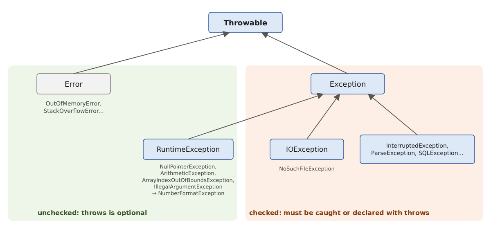

3. Die Grundlagen der Sprache Java
3.1. Einführung
Wir beginnen damit, Java als klassische Programmiersprache zu behandeln. Klassen besprechen wir im nächsten Kapitel. Ein Programm besteht aus zwei Dingen:
- Daten;
- den Anweisungen, die diese Daten verarbeiten.
Im Allgemeinen versucht man, Daten und Anweisungen voneinander zu trennen:

Alle Beispiele in diesem Kapitel sind kompakte Quelldateien: eine einzelne Datei mit der Endung [.java], ohne Maven-Projekt, die mit dem Befehl [java Basics01.java] ausgeführt wird. Der Launcher [java] kompiliert die Datei dann im Speicher und führt sie aus, ohne eine [.class]-Datei zu erzeugen. Diese Möglichkeit wurde in Kapitel 2, „Einrichtung der Entwicklungsumgebung“, eingeführt. Die Beispiele befinden sich im Ordner [03-basics] des Kurscodes. Sie laufen mit der französischen Sprache und den französischen Konventionen (der „Locale“ fr-FR), genau wie auf einem französischen Windows-Rechner. Wir werden sehen, dass sich dies nur auf Zahlen und Datumsangaben auswirkt, die mit einem bestimmten Format ausgegeben werden: Die einfache Umwandlung einer Gleitkommazahl in eine Zeichenkette verwendet immer den Dezimalpunkt.
3.2. Das minimale Programm
3.2.1. Die kompakte Quelldatei
Das Programm [Basics01.java] sieht wie folgt aus:
Ergebnisse:
Kommentare:
- Die Datei enthält keine Klassendeklaration, sondern nur eine Methode namens [main]. Das ist eine kompakte Quelldatei (Java 25). Der Compiler selbst bettet den Inhalt der Datei in eine implizit deklarierte Klasse ein, die den Namen der Datei trägt: [Basics01]. Dieses Feature wurde in Java 21 bis 24 als Preview eingeführt, bevor es in Java 25 endgültig wurde;
- Zeile 3: Die Methode [main] ist der Einstiegspunkt des Programms: Genau diese Methode führt der Launcher [java] aus. Ab Java 25 kann sie einfach als [void main()] geschrieben werden, ohne die Schlüsselwörter [public] und [static] und ohne Parameter. Der Rumpf der Methode steht in geschweiften Klammern;
- Zeile 4: Die Methode [println] der Klasse [IO] (Java 25) schreibt eine Zeile auf den Bildschirm;
- Zeile 6: die ältere Form desselben Vorgangs. [System] ist eine Klasse, [out] ist eines ihrer Felder und stellt die Standardausgabe (den Bildschirm) dar, und [println] ist eine Methode dieses Objekts. [IO.println(x)] ist lediglich eine Abkürzung für [System.out.println(x)]. Wir verwenden [IO.println] in kompakten Dateien und [System.out.println] in regulären Klassen, wo es im gesamten bestehenden Java-Code vorkommt;
- Zeile 8: [List] ist eine Liste von Zeichenketten; Listen werden in Kapitel 5 behandelt. [List] gehört zum Paket [java.util]: Ein Paket fasst zusammengehörige Klassen zusammen, so wie ein Ordner Dateien zusammenfasst. Der vollständige Name der Klasse lautet [java.util.List]. Sie kann ohne import-Anweisung verwendet werden, weil die Datei eine kompakte Datei ist (siehe unten);
- Zeile 9: Eine Liste wird mit ihren Elementen in eckigen Klammern angezeigt;
- jede Anweisung endet mit einem Semikolon; Zeilen, die mit // beginnen, sind Kommentare, die vom Compiler ignoriert werden.
Mit zwei Befehlszeilenargumenten (nach dem Dateinamen angegeben):
Die Argumente werden ignoriert, weil die Methode [void main()] keine Parameter hat, die sie entgegennehmen könnten. Um sie zu verwenden, deklarieren Sie sie als [void main(String[] args)]: Das Zeichenkettenarray [args] enthält dann die Befehlszeilenargumente. Darauf kommen wir im Abschnitt „Argumente des Hauptprogramms“ zurück.
3.2.2. Die klassische Form mit einer Klasse und einer main-Methode
Bis Java 24 musste dasselbe Programm wie folgt geschrieben werden: [Basics02.java]:
Ergebnisse:
Kommentare:
- Zeile 2: Die Anweisung [import] importiert die Klasse [Arrays] aus dem Paket [java.util]. Anschließend können Sie [Arrays] statt [java.util.Arrays] schreiben. In einer regulären Klasse können nur die Klassen des Pakets [java.lang] ([System], [String], [Math], [Integer], [IO] ...) ohne Import verwendet werden;
- Zeile 4: In Java gehört aller Code zu einer Klasse. Die Klasse heißt hier [Basics02]. Eine als [public] deklarierte Klasse muss in einer Datei mit diesem Namen liegen: [Basics02.java];
- Zeile 6: Die Methode [main] ist der Einstiegspunkt des Programms. Sie ist [public] (von außerhalb der Klasse zugänglich, insbesondere über den Launcher [java]), [static] (sie wird ausgeführt, ohne dass ein Objekt der Klasse erzeugt werden muss), liefert kein Ergebnis zurück ([void]) und erhält die Befehlszeilenargumente im Array [args];
- Zeile 8: Die Anzahl der Elemente des Arrays [args] ist [args.length]. Der Operator + verkettet hier eine Zeichenkette und eine Zahl: Die Zahl wird zuvor in eine Zeichenkette umgewandelt;
- Zeile 10: Die Methode [Arrays.toString] erzeugt aus den Elementen eines Arrays eine Zeichenkette.
Eine Datei, die eine reguläre Klasse enthält, kann ebenfalls direkt vom Launcher ausgeführt werden ([java Basics02.java]). Sie können sie auch zuerst mit dem Compiler [javac] kompilieren, der eine Datei [Basics02.class] mit dem Zwischencode („Bytecode“) der Klasse erzeugt, und diese Klasse dann mit dem Befehl [java] gefolgt vom Klassennamen (ohne Endung) ausführen. Genau das tun Maven und die Entwicklungsumgebungen im Hintergrund:
Die beiden Programme [Basics01.java] und [Basics02.java] sind wesensgleich. Trifft der Compiler auf eine kompakte Datei, erzeugt er selbst eine [final]-Klasse mit dem Namen der Datei, deren Methoden und Felder die in der Datei geschriebenen sind. Die kompakte Datei ist also lediglich eine Kurzschreibweise der Standardform. Sie eignet sich gut für die kleinen Programme dieses Kapitels; die Standardform wird notwendig, sobald ein Programm mehrere Klassen enthält, was ab Kapitel 4 der Fall sein wird.
Seit Java 25 kann die Methode [main] vier Formen haben: [static void main(String[] args)], [static void main()], [void main(String[] args)], und [void main()]; enthält eine Klasse mehrere davon, bevorzugt der Launcher diejenige mit dem Parameter [String[]]. Die beiden letzten Formen sind Instanzmethoden: Der Launcher erzeugt zunächst ein Objekt der Klasse und ruft dann dessen Methode [main] auf. Das Schlüsselwort [public] ist nicht mehr erforderlich.
3.2.3. Automatischer Import des Moduls java.base
Das Programm [Basics01.java] verwendet die Klasse [List] ohne die Anweisung [import java.util.List;]. Das ist möglich, weil der Compiler jeder kompakten Datei automatisch die folgende Anweisung hinzufügt (Java 25):
Die Klassen der Java-Standardbibliothek sind in Pakete gegliedert, die ihrerseits zu Modulen zusammengefasst sind. Das Modul [java.base] ist das Kernmodul: Es enthält die am häufigsten verwendeten Pakete. Die Anweisung [import module java.base;] importiert auf einmal alle öffentlichen Klassen aller Pakete, die dieses Modul exportiert, was unter anderem den folgenden Anweisungen entspricht:
In einer kompakten Datei haben Sie also – ohne eine einzige Zeile Code zu schreiben – Zugriff auf Listen und Dictionaries ([java.util]), Dateien ([java.io], [java.nio.file]), große Zahlen ([java.math]), Datumsangaben ([java.time]) usw. Eine Klasse aus einem anderen Modul – etwa die JDBC-Klassen aus dem Modul [java.sql] – muss immer ausdrücklich importiert werden. In einer regulären Klasse wird außerhalb des Pakets [java.lang] nichts automatisch importiert: Sie schreiben eine Anweisung pro Klasse ([import java.util.Arrays;]), eine pro Paket ([import java.util.*;]) oder, seit Java 25, eine pro Modul ([import module java.base;]). Die Klasse [IO] gehört zum Paket [java.lang]: Sie kann überall verwendet werden.
3.3. Java-Daten
Java verwendet die folgenden Datentypen:
- ganze Zahlen;
- reelle Zahlen;
- Dezimalzahlen;
- Zeichen und Zeichenketten;
- Boolesche Werte;
- Objekte.
3.3.1. Vordefinierte Datentypen
Java-Typ | Wrapper-Klasse | Dargestellte Daten | Literal-Suffix | Kodierung | Wertebereich |
[char] | [Character] | Zeichen | 2 Byte | Unicode-Zeichen (UTF-16), von '\u0000' bis '\uffff' | |
[byte] | [Byte] | ganze Zahl | 1 Byte | [-2⁷, 2⁷-1], d. h. [-128, 127] | |
[short] | [Short] | ganze Zahl | 2 Byte | [-2¹⁵, 2¹⁵-1] bzw. [-32768, 32767] | |
[int] | [Integer] | ganze Zahl | 4 Byte | [-2³¹, 2³¹-1] bzw. [-2147483648, 2147483647] | |
[long] | [Long] | ganze Zahl | L | 8 Byte | [-2⁶³, 2⁶³-1] bzw. [-9223372036854775808, 9223372036854775807] |
[float] | [Float] | reelle Zahl | F | 4 Byte | [1.4 10⁻⁴⁵, 3.4 10³⁸] im Absolutwert, 7 signifikante Stellen |
[double] | [Double] | reelle Zahl | D (optional) | 8 Byte | [4.9 10⁻³²⁴, 1.8 10³⁰⁸] im Absolutwert, 15 bis 16 signifikante Stellen |
[boolean] | [Boolean] | Boolescher Wert | Nicht definiert | [true], [false] | |
[String] (Klasse) | Zeichenkette | Referenz auf eine Folge von Unicode-Zeichen | |||
[BigDecimal] (Klasse) | Dezimalzahl | variabel | exakte Dezimalzahl beliebiger Genauigkeit | ||
[Object] (Klasse) | Objektreferenz | Referenz auf ein Objekt beliebigen Typs |
Die ersten acht Typen der Tabelle, deren Namen kleingeschrieben sind, sind die primitiven Typen von Java. Alle anderen Typen sind Referenztypen: Klassen ([String], [BigDecimal], [Object] ...) sowie Arrays, Enumerationen, Interfaces und Records, die wir später behandeln. Der Unterschied ist grundlegend:
- Eine Variable eines primitiven Typs enthält direkt ihren Wert;
- eine Variable eines Referenztyps enthält die Adresse des Objekts (seine Referenz), das Objekt selbst liegt an anderer Stelle im Speicher.
Ein Wert eines primitiven Typs ist kein Objekt: Er hat weder Felder noch Methoden. Zu jedem primitiven Typ gibt es jedoch eine „Wrapper-Klasse“ im Paket [java.lang]: [Integer] für [int], [Double] für [double], [Character] für [char] und so weiter. Ein Objekt [Integer] kapselt einen Wert [int]. Diese Klassen stellen außerdem nützliche Konstanten und Methoden bereit: [Integer.MAX_VALUE], [Integer.BYTES], [Integer.parseInt] ... Seit Java 5 wandelt der Compiler einen primitiven Typ automatisch in seine Wrapper-Klasse um (Boxing) und umgekehrt (Unboxing). So können wir schreiben:
Das Literal 3 hat den Typ [int]. Da es keine Methoden hat, können wir nicht [3.getClass()] schreiben: Wir müssen es zunächst mit [Integer.valueOf(3)] in ein Objekt vom Typ [Integer] verpacken. Jedes Objekt hat eine Methode [getClass()] , die ein Objekt zurückgibt, das seine Klasse beschreibt; die Methode [getName()] dieses Objekts liefert den vollständigen Namen der Klasse, hier [java.lang.Integer].
Java hat keine vorzeichenlosen ganzen Zahlen, abgesehen vom Typ [char] (16 Bit). Die Wrapper-Klassen stellen dagegen Methoden bereit, die die Bits einer ganzen Zahl als die einer vorzeichenlosen Zahl interpretieren: [Integer.toUnsignedString], [Integer.parseUnsignedInt], [Integer.compareUnsigned], [Byte.toUnsignedInt] ... Außerdem fehlt ein primitiver Dezimaltyp: Beträge werden mit der Klasse [BigDecimal] aus dem Paket [java.math] berechnet, die wir etwas später besprechen.
Das Programm [Basics03.java] veranschaulicht diese verschiedenen Punkte:
Ergebnisse:
Kommentare:
- Zeile 3: Deklaration einer ganzen Zahl [integer] , die mit 2 initialisiert wird;
- Zeile 4: Das Suffix F ist erforderlich: Das Literal 10.5 hat den Typ [double], und der Compiler lehnt [float fl = 10.5;] ab, was zu einem Genauigkeitsverlust führen würde;
- Zeile 7: Das Literal 1000 hat den Typ [int]; es wird automatisch in [long] umgewandelt;
- Zeile 12: Eine Zahl vom Typ [BigDecimal] ist ein Objekt; sie wird hier aus einer Zeichenkette erzeugt, was einen exakten Wert garantiert;
- Zeile 14: Die Methode [formatted] (Java 15) wird auf eine formatierte Zeichenkette angewendet: Jeder Platzhalter %s wird durch den in eine Zeichenkette umgewandelten Wert des folgenden Parameters ersetzt und jeder Platzhalter %d durch den Wert einer ganzen Zahl. Die Parameter werden der Reihe nach verwendet. Auf Formate gehen wir im nächsten Abschnitt ein;
- Zeile 14: Die Methode [typeName] (Zeilen 36–38) erwartet einen Parameter vom Typ [Object]. Die Variable [integer] vom Typ [int] wird automatisch in ein Objekt [Integer] verpackt, dessen Klasse [java.lang.Integer] ist: Deshalb zeigt die Ausgabe die Wrapper-Klassen und nicht die Namen der primitiven Typen. [Integer.BYTES] (Java 8) ist die Größe eines [int] in Byte;
- Zeile 17: [String] ist eine Klasse und kein primitiver Typ: Die Speichergröße eines Objekts ist in Java nicht zugänglich;
- Zeile 22: Die Größe eines [boolean] ist von der Java-Spezifikation nicht festgelegt: Die Klasse [Boolean] hat keine Konstante [BYTES];
- Zeile 25: Das Literal 3 wird ausdrücklich in ein [Integer]-Objekt verpackt;
- Zeilen 27–29: Die Konstanten [MIN_VALUE] und [MAX_VALUE] der Wrapper-Klassen legen die Grenzen des Wertebereichs fest. Achtung: Bei reellen Zahlen ist [Double.MIN_VALUE] der kleinste streng positive Wert (4.9 × 10⁻³²⁴) und nicht die größte negative Zahl, die [-Double.MAX_VALUE] ist;
- Zeilen 31–32: -1 wird als 32 auf 1 gesetzte Bits kodiert; als vorzeichenlose ganze Zahl interpretiert, entsprechen diese 32 Bits 2³²–1;
- Zeilen 36–38: eine Methode der kompakten Datei. Sie gibt ([return]) eine Zeichenkette ([String]) zurück. Methoden werden im Abschnitt „Parameterübergabe an eine Funktion“ beschrieben.
Beachten Sie, dass reelle Zahlen mit einem Dezimalpunkt angezeigt werden (10.5, -4.6), obwohl das Programm mit französischen Einstellungen läuft. Die Umwandlung einer Zahl in eine Zeichenkette durch Verkettung – mit [String.valueOf], [toString] oder dem Specifier %s – hängt nicht von der Sprache des Benutzers ab: Sie erzeugt immer einen Dezimalpunkt. Nur numerische Formate wie %f, die wir noch besprechen, folgen den Konventionen der Sprache.
3.3.2. Schreibweise von Literalen
Daten | Beispiele für Literale |
ganze Zahl [int] (32 Bit) | 145, -7, 0xFF (hexadezimal), 0b1010_1010 (binär) |
Ganze Zahl [long] (64 Bit), Suffix L | 100000L, 1_000_000_000_000L |
Gleitkommazahl [double], optionales Suffix D | 134.789, -45E-18 (-45 × 10⁻¹⁸), 10D |
reelle Zahl [float], Suffix F | 134.789F, -45E-18F |
Dezimalzahl [BigDecimal] | kein Literal: [new BigDecimal("100000.50")] |
Zeichen [char] | 'A', 'b', '\n', '\u00e9' |
Zeichenkette [String] | "today", "c:\\chap1", Textblock """...""" |
Boolescher Wert [boolean] | [true], [false] |
Datum | [LocalDate.of(1954, 10, 13)] (Jahr, Monat, Tag) für den 13.10.1954 |
Im Quellcode werden Gleitkommazahlen immer mit einem Dezimalpunkt geschrieben. Seit Java 7 können ganze Zahlen binär geschrieben werden (mit dem Präfix [0b]), und Ziffergruppen können zur besseren Lesbarkeit durch das Zeichen _ getrennt werden: [1_000_000] ist die ganze Zahl eine Million. Das Suffix L kann kleingeschrieben werden, doch l sieht der Ziffer 1 zu ähnlich. Beachten Sie schließlich eine aus der Sprache C geerbte Falle: Eine mit einer führenden 0 geschriebene ganze Zahl wird als Oktalzahl (Basis 8) interpretiert: 017 ist gleich 15.
Ein Zeichenkettenliteral kann Escape-Sequenzen enthalten, die mit dem Zeichen \ eingeleitet werden: "\n" steht für das Zeilenende-Zeichen und nicht für die Folge der beiden Zeichen \ und n, "\t" steht für einen Tabulator, "\"" für ein doppeltes Anführungszeichen und "\\" für das Zeichen \ selbst. Um den Windows-Pfad c:\chap1\paragraph3 zu schreiben, müssen Sie daher "c:\\chap1\\paragraph3" schreiben. Java kennt keine „rohe“ Zeichenkette, in der das Zeichen \ unverändert interpretiert wird; die Dateiklassen von Java akzeptieren unter Windows jedoch auch das Trennzeichen /: "c:/chap1/paragraph3" bezeichnet dieselbe Datei.
Um eine Zeichenkette aus mehreren Werten zu bilden, bietet Java zwei Möglichkeiten:
- die Verkettung mit dem Operator +: Sobald einer der beiden Operanden eine Zeichenkette ist, wird der andere in eine Zeichenkette umgewandelt;
- Formate: [String.format(format, value1, value2, ...)], oder gleichwertig [format.formatted(value1, value2, ...)] (Java 15), und für die direkte Anzeige [System.out.printf(format, value1, ...)]. Die Formatzeichenkette enthält Platzhalter, die der Reihe nach durch die folgenden Werte ersetzt werden: %s (ein beliebiger, in eine Zeichenkette umgewandelter Wert), %d (eine ganze Zahl), %f (eine Gleitkommazahl), %.2f (eine Gleitkommazahl mit zwei Nachkommastellen), %x oder %X (eine ganze Zahl in hexadezimaler Schreibweise), %,d (eine ganze Zahl mit Tausendertrennzeichen), %e (wissenschaftliche Notation), %n (ein Zeilenumbruch), %10s (eine auf 10 Zeichen rechtsbündig ausgerichtete Zeichenkette), %-10s (linksbündig) ... Numerische Formate folgen den Konventionen der Sprache des Benutzers.
Java unterstützt keine „interpolierten“ Zeichenketten mit Ausdrücken in geschweiften Klammern: Ein solches Feature (bekannt als „String Templates“) wurde in Java 21 und 22 als Preview vorgeschlagen, später aber wieder entfernt. Verkettung und Formatierung bleiben die einzigen Möglichkeiten.
Seit Java 15 können Sie eine Zeichenkette mit einem „Textblock“ über mehrere Zeilen schreiben: Er beginnt mit drei Anführungszeichen gefolgt von einem Zeilenumbruch und endet mit drei Anführungszeichen. Er kann Anführungszeichen ohne Escape-Sequenz enthalten. Führende Leerzeichen am Anfang aller Zeilen (einschließlich der Zeile mit den schließenden Anführungszeichen) werden entfernt, sodass der Text mit dem Code eingerückt werden kann. Escape-Sequenzen werden jedoch genauso interpretiert wie in einer normalen Zeichenkette: Um \ zu erhalten, müssen Sie stets \\ schreiben. Textblöcke sind sehr nützlich, um JSON, SQL oder HTML zu schreiben.
Das Programm [Basics04.java] zeigt diese verschiedenen Schreibweisen:
Ergebnisse:
Kommentare:
- Zeile 4: [0xFF] ist 255 und [0b1010_1010] ist 170;
- Zeile 5: Das Suffix L ist für ein Literal erforderlich, das den Bereich von [int] überschreitet. Ohne es lehnt der Compiler die Zeile mit der Meldung [error: integer number too large] ab;
- Zeile 8: -45E-18 wird als -4.5E-17 angezeigt: Es ist derselbe Wert, normalisiert. Die Gleitkommazahl 10D wird als 10.0 angezeigt: Die Umwandlung eines [double] in eine Zeichenkette erzeugt immer mindestens eine Nachkommastelle;
- Zeile 10: Ein [BigDecimal] behält die Anzahl der Nachkommastellen bei, mit der er geschrieben wurde: 100000.50 und nicht 100000.5;
- Zeile 13: Die Sequenz \u00e9 bezeichnet das Unicode-Zeichen mit dem Hexadezimalcode 00E9, also é;
- Zeile 17: ein Datum. Die Klasse [LocalDate] (Paket [java.time], Java 8) stellt ein Datum ohne Uhrzeit dar. Ihre Umwandlung in eine Zeichenkette verwendet unabhängig von der Sprache das internationale Format ISO 8601 (Jahr-Monat-Tag). Mit Datumsangaben beschäftigen wir uns in Kapitel 5;
- Zeile 21: Jedes \\ steht für ein einzelnes Zeichen \;
- Zeile 23: ein Zeilenumbruch und ein Tabulator;
- Zeile 28: eine Verkettung. Die Klammern in [(age + 10)] sind unerlässlich: Ohne sie würden die Operatoren + von links nach rechts ausgewertet, die Zeichenkette würde zuerst 23 und dann 10 erhalten, und das Ergebnis wäre „he will be 2310 years old“;
- Zeile 29: derselbe Text, mit einem Format erzeugt;
- Zeile 31: einige Formatspezifizierer: %.1f (eine Nachkommastelle), %X (hexadezimal in Großbuchstaben), %,d (Tausendertrennzeichen). Diese Formate folgen den französischen Konventionen: einem Dezimalkomma und, als Tausendertrennzeichen, einem schmalen geschützten Leerzeichen;
- Zeile 32: Für Binärzahlen gibt es keinen Spezifizierer; die Methode [Integer.toBinaryString] nimmt die Umwandlung vor;
- Zeile 33: ein benutzerdefiniertes Datumsformat: Wochentag (EEEE), Tag (d), Monat in Worten (MMMM), Jahr (yyyy). Die Namen der Tage und Monate sind auf Französisch, der Sprache des Benutzers;
- Zeilen 36–41: ein mehrzeiliger Textblock. Die Anführungszeichen werden unverändert geschrieben. Die acht Leerzeichen, die allen Zeilen gemeinsam sind, wurden entfernt. Die Sequenz \\ ergab ein einzelnes \. Da die schließenden Anführungszeichen allein in ihrer Zeile stehen, endet der Block mit einem Zeilenumbruch: Er wird daher mit [IO.print] angezeigt, das nicht in die nächste Zeile springt;
- Zeilen 44–45: ein Textblock, in dem die schließenden Anführungszeichen direkt auf den Text folgen; er endet nicht mit einem Zeilenumbruch. Die Methode [formatted] ersetzt %s und %d durch die Werte von [name] und [age]: So fügt man in Java Werte in einen Text ein.
3.3.3. Deklaration von Daten
3.3.3.1. Aufgabe von Deklarationen
Ein Programm verarbeitet Daten, die durch einen Namen und einen Typ gekennzeichnet sind. Diese Daten werden im Speicher abgelegt. Beim Kompilieren des Programms weist der Compiler jedem Datum einen Speicherplatz zu, der durch eine Adresse und eine Größe gekennzeichnet ist. Dazu verwendet er die Deklarationen des Programmierers. Außerdem ermöglichen diese Deklarationen dem Compiler, Programmierfehler zu erkennen. So wird die Operation [x = x * 2;] als Fehler gemeldet, wenn [x] eine Zeichenkette ist.
3.3.3.2. Deklaration von Konstanten
In Java ist eine Konstante eine Variable, die mit dem Schlüsselwort [final] deklariert wird: Ihr kann nur einmal ein Wert zugewiesen werden. Die Syntax lautet:
Eine Konstante, die im gesamten Programm verwendet wird, deklariert man außerhalb von Methoden als Klassen-Feld [static final]. Zum Beispiel:
Warum Konstanten deklarieren?
- Das Programm ist leichter lesbar, wenn die Konstante einen aussagekräftigen Namen hat;
- das Programm lässt sich leichter ändern, wenn die „Konstante“ geändert werden muss. Wenn sich der Mehrwertsteuersatz auf 0.25 ändert, ist nur die Anweisung zu ändern, die seinen Wert festlegt: [static final double VAT_RATE = 0.25;]. Hätte man im Programm ausdrücklich 0.2 verwendet, müssten zahlreiche Anweisungen geändert werden.
Nach Konvention wird in Java der Name einer Konstanten [static final] in Großbuchstaben geschrieben, wobei die Wörter durch das Zeichen _ getrennt werden: [VAT_RATE], [MAX_VALUE]. Eine lokale Variable kann ebenfalls als [final] deklariert werden; in diesem Fall behält sie einen normalen Namen. Das Wort [const] ist in Java reserviert, wird aber nicht verwendet.
3.3.3.3. Deklaration von Variablen
Eine Variable wird durch einen Namen gekennzeichnet und ist einem Datentyp zugeordnet. Java unterscheidet zwischen Groß- und Kleinschreibung: Die Variablen [END] und [end] sind verschieden. Nach Konvention beginnt ein Variablenname mit einem Kleinbuchstaben, und jedes weitere Wort beginnt mit einem Großbuchstaben: [priceExclTax], [nbChildren].
Variablen können bei ihrer Deklaration initialisiert werden. Die Syntax zur Deklaration einer oder mehrerer Variablen lautet:
Dabei ist [type] ein vordefinierter oder ein vom Programmierer definierter Typ. Die Initialisierung ist optional; Java erlaubt jedoch nicht, eine lokale Variable zu verwenden, der noch kein Wert zugewiesen wurde (Fehlermeldung [variable x might not have been initialized]).
Seit Java 10 können Sie den Typ einer lokalen Variablen auch weglassen, indem Sie anstelle des Typs das Schlüsselwort [var] verwenden:
Das Wort [var] bedeutet nicht, dass die Variable keinen bestimmten Typ hat: Sie hat den Typ des ihr zugewiesenen Werts, den der Compiler ermittelt. Die Initialisierung ist hier erforderlich, damit der Compiler den Typ ableiten kann. [var] kann nur für lokale Variablen verwendet werden (nicht für Felder oder Methodenparameter). Es wird verwendet, wenn der Typ aus dem Wert offensichtlich ist, insbesondere wenn der Variablenname lang ist.
Das Programm [Basics05.java] sieht wie folgt aus:
Ergebnisse:
Kommentare:
- Zeile 3: eine Klassenkonstante. In einer kompakten Datei ist eine außerhalb von Methoden deklarierte Variable ein Feld der impliziten Klasse;
- Zeile 7: eine lokale Konstante;
- Zeile 9: Das Ergebnis ist ein [double], das mit mindestens einer Nachkommastelle angezeigt wird: 120.0;
- Zeile 12: ein ausdrücklich typisierter Wert;
- Zeile 13: [getSimpleName()] (Zeile 33) ist der Kurzname der Klasse; [getName()] ist ihr vollständiger Name. Wie im vorigen Programm wird [int] in ein [Integer] verpackt, um es an [typeName] zu übergeben;
- Zeile 15: ein implizit typisierter Wert. Da 3 den Typ [int] hat, hat [j] den Typ [int]. Die Anzeige zeigt [Integer] aus demselben Grund wie in Zeile 13;
- Zeile 17: Da [LocalDateTime.now()] (das aktuelle Datum mit Uhrzeit) den Typ [LocalDateTime] hat, hat [today] den Typ [LocalDateTime];
- Zeilen 19–22: Der abgeleitete Typ hängt von der Schreibweise des Literals ab: 3.5 ist ein [double], 3.5F ist ein [float] und 10L ist ein [long];
- Zeile 26: drei Variablen, die in derselben Zeile deklariert werden; nur [a] und [c] werden initialisiert. [b] erhält in der nächsten Zeile einen Wert.
Eine implizit mit [var] typisierte Variable kann ihren Typ danach nicht mehr ändern. So wird nach Zeile 17 die Anweisung [today = "today";] vom Compiler abgelehnt:
3.3.4. Fehlende Werte: null, Wrapper-Klassen und Optional
Eine Variable eines primitiven Typs wie [int] enthält immer einen Wert. Manchmal ist es nützlich, das Fehlen eines Werts ausdrücken zu können: ein unbekanntes Alter, ein leeres Feld in einer Datenbank. Dafür verwendet man die Wrapper-Klasse: Eine Variable vom Typ [Integer] ist eine Referenz, die [null] sein kann, also „kein Objekt“.
Jede Variable eines Referenztyps kann tatsächlich den Wert [null] haben: In diesem Fall verweist sie auf kein Objekt. Der Versuch, ein Member einer solchen Variablen zu verwenden – zum Beispiel ihre Methode [length()] –, verursacht einen Laufzeitfehler, eine [NullPointerException]: Das ist der häufigste Fehler in Java. Seit Java 15 gibt die Fehlermeldung genau an, welcher Ausdruck den Wert [null] ergab. Der Java-Compiler unterscheidet nicht zwischen einer Referenz, die den Wert [null] annehmen kann, und einer, die es nicht kann; Annotationen wie die des Projekts JSpecify ([@Nullable], [@NonNull]), die von Analysewerkzeugen genutzt werden, helfen, diese Schwäche auszugleichen, doch wir werden sie nicht verwenden.
Um anzuzeigen, dass eine Methode möglicherweise nichts zurückgibt, hat Java 8 die Klasse [Optional<T>] hinzugefügt: Ein Objekt [Optional<String>] ist eine „Box“, die eine Zeichenkette enthält oder leer ist. Es wird mit [Optional.of(value)], [Optional.empty()], oder [Optional.ofNullable(valueOrNull)] erzeugt und mit [isPresent()], [isEmpty()] (Java 11), [get()], [orElse(defaultValue)] ... abgefragt. Die Klassen [OptionalInt], [OptionalLong], und [OptionalDouble] erfüllen für primitive Typen denselben Zweck.
Dem Wert [null] begegnen wir schon in den ersten Beispielen, weil die Methode [IO.readln()], die eine über die Tastatur eingegebene Zeile liest, [null] zurückgibt, wenn nichts mehr zu lesen ist (Ende des Eingabestroms). Das Programm [Basics06.java] sieht wie folgt aus:
Ergebnisse bei Eingabe über die Tastatur:
Ergebnisse, wenn der Benutzer Strg-D drückt (unter Windows Strg-Z gefolgt von der Eingabetaste), was den Eingabestrom schließt:
Kommentare:
- Zeile 4: [age] verweist auf kein Objekt;
- Zeile 7: [int] 23 wird automatisch verpackt: Der Compiler hat für uns [age = Integer.valueOf(23);] erzeugt;
- Zeile 10: [Integer] wird automatisch entpackt: Der Compiler hat [int n = age.intValue();] geschrieben;
- Zeilen 13–19: Das Entpacken eines
*[Integer]*, der gleich[null]ist, entspricht dem Aufruf von*[intValue()]auf einer Null-Referenz: Es wird eine*[NullPointerException]ausgelöst. Die Falle ist umso heimtückischer, als in Zeile 15 kein Methodenaufruf sichtbar ist. Die Struktur [try / catch], die den Fehler abfängt, wird später vorgestellt; hier wird der vollständige Klassenname der Exception angezeigt; - Zeile 22: eine Zeichenkette, die auf kein Objekt verweist;
- Zeile 25: ein [Optional] , das die Zeichenkette "dupont" enthält. Die Methode [get()] (Zeile 27) gibt seinen Inhalt zurück; auf ein leeres [Optional] angewendet, würde sie eine [NoSuchElementException] auslösen;
- Zeile 26: ein leeres [Optional];
- Zeile 28: [orElse] gibt den Inhalt des [Optional] zurück oder, wenn es leer ist, den als Parameter übergebenen Ersatzwert;
- Zeile 31: [IO.readln(prompt)] (Java 25) zeigt die Eingabeaufforderung an, ohne in die nächste Zeile zu wechseln, und liest dann die über die Tastatur eingegebene Zeile. Es gibt [null] zurück, wenn der Eingabestrom geschlossen ist;
- Zeile 32: Der Wert [null] wird geprüft;
- Zeile 36: Im Zweig [else] ist [line] nicht gleich [null]: [line.length()] kann gefahrlos verwendet werden.
3.3.5. Umwandlungen zwischen Zahlen und Zeichenketten
Umwandlung | Methode |
Zahl -> Zeichenkette | [String.valueOf(number)], [Integer.toString(number)], ["" + number], oder ein Format wie [String.format("%d", number)] |
Zeichenkette -> int | [Integer.parseInt(string)] |
Zeichenkette -> long | [Long.parseLong(string)] |
Zeichenkette -> double | [Double.parseDouble(string)] |
Zeichenkette -> float | [Float.parseFloat(string)] |
Zeichenkette -> BigDecimal | [new BigDecimal(string)] |
Zeichenkette -> boolean | [Boolean.parseBoolean(string)] |
Die Umwandlung einer Zeichenkette in eine Zahl kann fehlschlagen, wenn die Zeichenkette keine gültige Zahl darstellt. Die Umwandlungsmethode löst dann einen Fehler aus, den man Exception nennt – hier vom Typ [NumberFormatException] –, der das Programm beendet, wenn er nicht behandelt wird. Dieser Fehler lässt sich mit der folgenden [try / catch]-Klausel behandeln:
Löst die Methode keine Exception aus, wird die nächste Anweisung ausgeführt; andernfalls wird der Rumpf der Klausel [catch] ausgeführt und anschließend mit der nächsten Anweisung fortgefahren. Auf die Behandlung von Exceptions kommen wir im dafür vorgesehenen Abschnitt zurück.
Die Methoden [parseInt], [parseDouble] ... akzeptieren ein führendes Vorzeichen + oder -, aber keine Leerzeichen und keine Tausendertrennzeichen: Verwenden Sie die Methode [trim()] der Klasse [String], um führende und nachfolgende Leerzeichen einer Eingabe vor der Umwandlung zu entfernen. Die Java-Bibliothek hat keine Methode, die eine Umwandlung versucht und statt einer Exception einen Erfolgsindikator zurückgibt; es ist leicht, eine zu schreiben, die im Fehlerfall ein leeres [OptionalInt] zurückgibt: Genau das tut die Methode [tryParseInt] im folgenden Programm.
Das Programm [Basics07.java] zeigt einige Techniken zur Umwandlung zwischen Zahlen und Zeichenketten. Die Methode [display] dieses Programms gibt den Wert ihres Parameters auf dem Bildschirm aus:
Ergebnisse:
Kommentare:
- Zeilen 4–7: die zu konvertierenden Daten;
- Zeilen 10–13: vier Möglichkeiten, eine Zahl in eine Zeichenkette umzuwandeln. Die letzte verkettet eine leere Zeichenkette mit der Zahl;
- Zeile 17: Ein boolescher Wert wird angezeigt – [true] oder [false];
- Zeilen 22–27: Behandelt die Ausnahme, die [Integer.parseInt] auslösen kann. [e.getMessage()] ist die der Ausnahme [e] zugeordnete Fehlermeldung. Die Ausnahmemeldungen des JDK sind auf Englisch: Sie werden nicht übersetzt;
- Zeile 40: [Double.parseDouble] erwartet unabhängig von der Sprache des Benutzers immer einen Dezimalpunkt: Die Zeichenkette „100.87“ wird auf allen Rechnern gleich interpretiert. Dies ist der richtige Weg, um Zahlen aus Dateien oder beim Austausch zwischen Programmen zu lesen;
- Zeile 53: Das Dezimalkomma wird folglich abgelehnt;
- Zeile 60: Umwandlung einer Zeichenkette mit [BigDecimal]; auch diese Methode erwartet einen Dezimalpunkt;
- Zeilen 64–71: Die Methode [tryParseInt] (Zeilen 92–98) liefert ein [OptionalInt] , das die ganze Zahl enthält, wenn die Umwandlung erfolgreich war, und andernfalls leer ist. [getAsInt()] liefert die enthaltene ganze Zahl;
- Zeile 74: [Locale.getDefault()] liefert die Locale des Programms – also Sprache und Land des Benutzers, wie sie von den Systemeinstellungen bestimmt werden: hier fr-FR;
- Zeile 75: Ein Format verwendet die aktuelle Locale: Die Gleitkommazahl wird mit Dezimalkomma geschrieben;
- Zeile 76: [Locale.ROOT] ist eine neutrale Locale, die unabhängig vom Rechner den Punkt als Dezimaltrennzeichen verwendet. Sie dient zum Schreiben formatierter Zahlen in Dateien oder beim Austausch zwischen Programmen, die nicht von der Sprache des Benutzers abhängen dürfen;
- Zeile 79: Um eine nach französischen Konventionen geschriebene Zahl zu lesen, verwenden Sie ein [NumberFormat]-Objekt (Paket [java.text]), das für die Locale [Locale.FRANCE] ermittelt wurde. Seine Methode [parse] liefert ein [Number]-Objekt und kann eine [ParseException] auslösen. Dies ist eine checked Exception: Der Compiler verlangt, dass sie behandelt wird, was wir im Abschnitt über Ausnahmen erläutern werden;
- Zeilen 87–89: eine Methode aus der kompakten Datei. Methoden können in beliebiger Reihenfolge vor oder nach [main] geschrieben werden;
- Zeilen 92–98: die Methode [tryParseInt]. Die Variable in der [catch]-Klausel heißt _: Seit Java 22 bezeichnet dieses Zeichen eine anonyme Variable, die deklariert wird, weil die Syntax es verlangt, die aber tatsächlich nicht verwendet wird.
Beachten Sie, dass die Methoden [parseXXX] und [toString] die Sprache des Benutzers (Dezimalpunkt) ignorieren, wohingegen die Formate und die Klasse [NumberFormat] sie berücksichtigen. Ein Programm, das Zahlen liest, muss immer wissen, nach welchen Konventionen sie geschrieben wurden.
3.3.6. Datenfelder (Arrays)
Ein Java-Array ist ein Objekt, mit dem Daten desselben Typs unter einem einzigen Bezeichner zusammengefasst werden. Es wird wie folgt deklariert:
[n] ist die Anzahl der Datenelemente, die das Array aufnehmen kann. Die Syntax [array[i]] bezeichnet das Datenelement Nummer i, wobei i im Intervall [0, n-1] liegt. Jeder Zugriff auf das Datenelement [array[i]] mit einem i außerhalb des Bereichs [0, n-1] löst eine [ArrayIndexOutOfBoundsException] aus. Beim Erzeugen erhält jedes Element des Arrays den Standardwert seines Typs: 0 für Zahlen, [false] für boolesche Werte und [null] für Referenztypen. Ein Array kann zugleich mit seiner Deklaration initialisiert werden:
oder, einfacher, in einer Deklaration:
Arrays besitzen ein Feld [length] (ohne Klammern), das die Anzahl der Elemente angibt. Ein Array kann nach seiner Erzeugung seine Größe nicht mehr ändern: Für eine wachsende Sammlung verwendet man eine Liste (Kapitel 5). Man begegnet auch der aus der Sprache C übernommenen Schreibweise [int integers[]]: Sie wird akzeptiert, ist aber nicht empfehlenswert.
Java kennt keine echten zweidimensionalen Arrays: Ein Array mit zwei Indizes ist ein Array von Arrays. Die Deklaration
erzeugt ein Array mit [n] Elementen, von denen jedes eine Referenz auf ein Array mit [m] Elementen ist: [n] Zeilen und [m] Spalten. Die Syntax [array[i][j]] bezeichnet das Element j der Zeile i. [array.length] ist die Anzahl der Zeilen, und [array[i].length] ist die Anzahl der Elemente der Zeile i. Das Array kann auch zugleich mit seiner Deklaration initialisiert werden:
Da jede Zeile ein eigenständiges Array ist, können die Zeilen unterschiedlich lang sein (man spricht von einem „gezackten Array“). Die Deklaration
erzeugt ein Array mit n Elementen, von denen jedes eine Referenz auf ein eindimensionales Array ist. Diese Referenzen werden durch die obige Deklaration nicht initialisiert: Sie haben den Wert [null].
Java bietet weder vom Ende des Arrays aus gezählte Indizes noch eine Schreibweise zum Herausschneiden eines Elementbereichs. Das letzte Element wird als [array[array.length - 1]] geschrieben, und die Methode [Arrays.copyOfRange(array, start, end)] liefert ein neues Array, das aus den Elementen mit den Indizes von [start] (einschließlich) bis [end] (ausschließlich) besteht. Die Klasse [java.util.Arrays] bietet viele weitere Hilfsmethoden: [toString], [deepToString], [sort], [fill], [equals], [copyOf] ... Listen, die flexibler sind, besitzen seit Java 21 die Methoden [getFirst()] und [getLast()] .
Das Programm [Basics08.java] kombiniert diese verschiedenen Arrays:
Ergebnisse:
Kommentare:
- Zeile 4: Ein eindimensionales Array wird initialisiert;
- Zeile 5: Eine [for] -Schleife durchläuft die Indizes von 0 bis [integers.length - 1]. Die Schleife [for] wird weiter unten vorgestellt;
- Zeile 10: ein zweidimensionales Array (2 Zeilen, 2 Spalten). Die ganze Zahl -6 wird in die Gleitkommazahl -6.0 umgewandelt;
- Zeilen 11–12: [reals.length] ist die Anzahl der Zeilen, und [reals[i].length] ist die Anzahl der Spalten der Zeile i;
- Zeile 16: [Arrays.deepToString] zeigt ein Array von Arrays an;
- Zeile 19: ein Array [names] mit 3 Elementen. Jedes Element ist eine Referenz auf ein Array vom Typ [String[]], derzeit [null];
- Zeile 21: Die 3 Elemente des Arrays [names] werden initialisiert. [names[i]] verweist nun auf ein Array mit i+1 Zeichenketten;
- Zeile 26: [names[i][j]] ist das j-te Element des Arrays, auf das [names[i]] verweist. Der Ausdruck "name" + i + j wird von links nach rechts ausgewertet: "name" + i ergibt eine Zeichenkette, an die j angehängt wird;
- Zeilen 37–38: ohne Anfangswerte erzeugte Arrays: Ihre Elemente haben den Standardwert ihres Typs;
- Zeile 42: die Kurzform der Initialisierung;
- Zeile 44: Die Methode [Arrays.toString] erstellt aus den Elementen des Arrays eine Zeichenkette. Die direkte Ausgabe des Arrays ([IO.println(values)]) würde einen Text wie [I@6328d34a ergeben (den Typ des Arrays und einen numerischen Code) statt seines Inhalts;
- Zeile 46: das letzte und das vorletzte Element;
- Zeile 48: die Elemente an den Indizes 1 und 2;
- Zeile 50: die Elemente ab Index 2 bis zum Ende;
- Zeilen 53–54: [copyOfRange] erzeugt eine Kopie: Eine Änderung von [slice] ändert nicht [values];
- Zeilen 56–57: eine nicht veränderbare Liste, erzeugt mit [List.of], und ihre Methoden [getFirst()] und [getLast()] (Java 21).
3.4. Die grundlegenden Anweisungen von Java
Es gibt zwei Arten:
- grundlegende Anweisungen, die vom Computer ausgeführt werden;
- Anweisungen, die den Ablauf des Programms steuern.
Die grundlegenden Anweisungen erschließen sich, wenn man den Aufbau eines Mikrocomputers und seiner Peripheriegeräte betrachtet:

- 1: Lesen von Informationen von der Tastatur;
- 2: Verarbeiten von Informationen;
- 3: Schreiben von Informationen auf den Bildschirm.
3.4.1. Auf den Bildschirm schreiben
Es gibt verschiedene Anweisungen zum Schreiben auf den Bildschirm:
Dabei ist [expression] ein beliebiges Datum, das für die Anzeige auf dem Bildschirm in eine Zeichenkette umgewandelt werden kann. Alle Java-Objekte besitzen eine Methode [toString()], mit der diese Umwandlung durchgeführt wird; Werte primitiver Typen werden von [String.valueOf] umgewandelt. Die Methode [print] tut dasselbe wie [println] , jedoch ohne Zeilenumbruch, und die Methode [printf(format, value1, ...)] schreibt das Ergebnis in einem bestimmten Format.
Die Klasse [System] bietet Zugriff auf zwei Ausgabeströme, ihre statischen Felder [out] und [err] vom Typ [PrintStream]:
- [System.out.println()] schreibt in den Strom [out], die Standardausgabe, die üblicherweise dem Bildschirm zugeordnet ist;
- [System.err.println()] schreibt in den Strom [err], die Fehlerausgabe, die ebenfalls üblicherweise dem Bildschirm zugeordnet ist.
Die Klasse [IO] (Java 25) stellt die Methoden [println] und [print] bereit, die in [System.out] schreiben. Die Ströme [out] und [err] können zur Laufzeit in Dateien umgeleitet werden, wie wir gleich sehen werden.
3.4.2. Über die Tastatur eingegebene Daten lesen
Der Datenstrom der Tastatur wird durch das Feld [System.in] vom Typ [InputStream] bezeichnet. Es handelt sich um einen Strom von Bytes, der sich direkt nur schlecht verwenden lässt. Lange Zeit musste man, um eine Textzeile zu lesen, ihn in andere Objekte einpacken:
oder die Klasse [Scanner] verwenden (Java 5). Ab Java 25 bietet die Klasse [IO] eine viel einfachere Methode, [readln], in zwei Formen:
Die über die Tastatur eingegebene Zeile wird ohne das Zeilenendezeichen in der Variablen [line] gespeichert und kann dann vom Programm verarbeitet werden. Die zweite Form zeigt zuerst eine Eingabeaufforderung an, ohne in die nächste Zeile zu wechseln. Wie wir gesehen haben, liefert [readln] den Wert [null] , wenn der Eingabestrom erschöpft ist. Der Strom [System.in] kann wie die Ströme [out] und [err] in eine Datei umgeleitet werden. Beachten Sie schließlich die Klasse [Console], die man über [System.console()] erhält und deren Methode [readPassword] ein Passwort liest, ohne es anzuzeigen.
3.4.3. Beispiel für Ein-/Ausgabe
Das Programm [Basics09.java] veranschaulicht Ein- und Ausgabeoperationen über Tastatur und Bildschirm:
Ergebnisse:
Kommentare:
- Zeile 4: [obj] ist eine Objektreferenz;
- Zeile 5: [obj] wird auf dem Bildschirm angezeigt. Die Methode [obj.toString()] wird aufgerufen, um den anzuzeigenden Text abzurufen;
- Zeile 9: Daten werden in den Strom [err] geschrieben;
- Zeile 10: dasselbe, aber mit einem Format. Der erste Parameter, "i=%d%n", ist das Anzeigeformat; die übrigen Parameter sind die anzuzeigenden Werte: %d wird durch den Wert von [i] ersetzt und %n durch das Zeilenendezeichen des Systems (\r\n unter Windows, \n unter Linux und macOS);
- Zeile 13: Eine Eingabeaufforderung wird angezeigt, ohne in die nächste Zeile zu wechseln, dann wird die über die Tastatur eingegebene Zeile gelesen;
- Zeile 14: Wenn [line] gleich [null] wäre, ergäbe die Verkettung die Zeichenkette "null".
In den Ergebnissen:
- Zeile 2: die von Zeile 5 des Codes erzeugte Ausgabe. Die Methode [toString()] der Klasse [Object] liefert den vollständigen Klassennamen des Objekts, gefolgt vom Zeichen @ und einem hexadezimalen numerischen Code (seinem „Hashcode“), der von Ausführung zu Ausführung oder von Rechner zu Rechner variieren kann. Klassen überschreiben diese Methode in der Regel, um etwas Nützlicheres anzuzeigen, wie wir es in Kapitel 4 tun werden;
- Zeilen 3–4: Die beiden Schreibvorgänge in den Strom [err] erscheinen auf dem Bildschirm genauso wie die in den Strom [out].
3.4.4. Ein-/Ausgabeumleitung
Windows, Linux und macOS kennen drei Standardgeräte:
- das Standardeingabegerät, das standardmäßig die Tastatur bezeichnet und die Nummer 0 trägt;
- das Standardausgabegerät, das standardmäßig den Bildschirm bezeichnet und die Nummer 1 trägt;
- das Standardfehlergerät, das standardmäßig den Bildschirm bezeichnet und die Nummer 2 trägt.
In Java schreibt der Ausgabestrom [System.out] auf das Gerät 1, der Ausgabestrom [System.err] auf das Gerät 2, und der Eingabestrom [System.in] liest Daten vom Gerät 0.
Wenn Sie ein Programm in einem Befehlsfenster ausführen, können Sie festlegen, welche Geräte für das ausgeführte Programm die Geräte 0, 1 und 2 sind. Nach den Programmargumenten können Sie die Standardeingabe- und Standardausgabegeräte in Dateien umleiten:
Umleitung | Bedeutung |
0<in.txt oder <in.txt | Der Standardeingabestrom Nr. 0 wird in die Datei in.txt umgeleitet. Im Programm liest der Strom [System.in] seine Daten daher aus der Datei in.txt |
1>out.txt oder >out.txt | leitet die Ausgabe Nr. 1 in die Datei out.txt um. Im Programm schreibt der Strom [System.out] seine Daten daher in die Datei out.txt |
1>>out.txt oder >>out.txt | Wie oben, aber die geschriebenen Daten werden an den aktuellen Inhalt der Datei out.txt angehängt |
2>err.txt | leitet die Ausgabe Nr. 2 in die Datei err.txt um. Im Programm schreibt der Strom [System.err] seine Daten daher in die Datei err.txt |
2>>err.txt | Wie oben, aber die geschriebenen Daten werden an den aktuellen Inhalt der Datei err.txt angehängt |
1>out.txt 2>err.txt | Die Geräte 1 und 2 werden beide in Dateien umgeleitet |
Beachten Sie, dass das Programm nicht geändert werden muss, um die Ein- und Ausgabeströme eines Programms in Dateien umzuleiten: Das Betriebssystem legt die Art der Geräte 0, 1 und 2 fest. Betrachten Sie das folgende Programm [Basics10.java]:
Die Umleitungen gelten für das vom Befehl [java] gestartete Programm. Hier eine Sitzung in einem Linux-Terminal (bash):
Kommentare:
- Zeile 1: Wir schreiben die Zeichenkette "test" in die Datei in.txt;
- Zeile 2: Der Inhalt der Datei in.txt wird zur Kontrolle angezeigt;
- Zeile 4: Das Programm wird ausgeführt. Der Strom [System.in] wird in die Datei in.txt umgeleitet, der Strom [System.out] in die Datei out.txt und der Strom [System.err] in die Datei err.txt. Die Ausführung erzeugt keine Ausgabe;
- Zeilen 5–6: Der Inhalt der Datei out.txt zeigt, dass die Datei in.txt gelesen wurde und dass das Schreiben in den Strom [out] nach out.txt umgeleitet wurde;
- Zeilen 7–8: entsprechende Kontrolle für die Datei err.txt;
- Zeilen 9–10: Nur der Strom [err] wird umgeleitet: Der Bildschirm zeigt nur den Schreibvorgang in den Strom [out] an;
- Zeilen 11–12: Nur der Strom [out] wird umgeleitet: Der Bildschirm zeigt nur den Schreibvorgang in den Strom [err] an.
Es ist klar, dass die Ströme [out] und [err] nicht auf dieselben Geräte schreiben, da sie getrennt umgeleitet werden konnten. Der Strom [err] ist für Fehlermeldungen gedacht: So können Sie die Ausgabe eines Programms in eine Datei umleiten und dennoch seine Fehlermeldungen auf dem Bildschirm sehen.
Die Operatoren >, >> und 2> werden in der Windows-Eingabeaufforderung ([cmd]), in PowerShell und in bash gleich geschrieben. Der Operator < wird von [cmd] und bash erkannt, nicht aber von PowerShell, das ihn für eine künftige Verwendung reserviert: In PowerShell sendet man eine Datei über eine Pipe (|) an die Standardeingabe eines Programms. Die folgenden Befehle, die zur Veranschaulichung dienen (sie wurden für diesen Kurs nicht ausgeführt), leisten unter Windows dasselbe wie die obige bash-Sitzung:
3.4.5. Einer Variablen den Wert eines Ausdrucks zuweisen
Hier geht es um die Operation [variable = expression;]. Der Ausdruck kann arithmetisch, relational, boolesch, eine Zeichenkette usw. sein.
3.4.5.1. Interpretation der Zuweisungsoperation
Die Operation [variable = expression;] ist selbst ein Ausdruck, der wie folgt ausgewertet wird:
- Die rechte Seite der Zuweisung wird ausgewertet: Das Ergebnis ist ein Wert V;
- Der Wert V wird der Variablen zugewiesen;
- Der Wert V ist zugleich der Wert der Zuweisung, diesmal als Ausdruck betrachtet.
Deshalb ist die Operation [V1 = V2 = expression] gültig. Da der Operator = von rechts nach links ausgewertet wird, erhalten wir [V1 = (V2 = expression)]. Der Ausdruck [V2 = expression] wird ausgewertet und hat den Wert V. Seine Auswertung hat bewirkt, dass V der Variablen V2 zugewiesen wurde. Der nächste Operator = wird dann als [V1 = V] ausgewertet. Der Wert dieses Ausdrucks ist weiterhin V; seine Auswertung führt dazu, dass V der Variablen V1 zugewiesen wird. Die Operation [V1 = V2 = expression] ist also ein Ausdruck, dessen Auswertung:
- bewirkt, dass der Wert von [expression] den Variablen V1 und V2 zugewiesen wird;
- den Wert von [expression] liefert.
Dies lässt sich auf einen Ausdruck der Form [V1 = V2 = ... = Vn = expression] verallgemeinern.
3.4.5.2. Arithmetische Ausdrücke
In arithmetischen Ausdrücken werden die folgenden Operatoren verwendet:
Operator | Rolle |
+ | Addition |
- | Subtraktion |
* | Multiplikation |
/ | Division: Das Ergebnis ist der exakte Quotient, wenn mindestens einer der Operanden eine reelle Zahl ist. Sind beide Operanden ganze Zahlen, ist das Ergebnis der ganzzahlige Quotient. So ergibt 5/2 den Wert 2 und 5.0/2 den Wert 2.5 |
% | Rest der Division (Modulo), unabhängig von der Art der Operanden. Der Rest hat dasselbe Vorzeichen wie der Dividend: -5 % 2 ergibt -1. Die Methode [Math.floorMod(-5, 2)] liefert den Rest im mathematischen Sinn mit demselben Vorzeichen wie der Divisor: 1 |
Es gibt verschiedene mathematische Funktionen. Hier einige davon:
Funktion | Rolle |
[double sqrt(double x)] | Quadratwurzel |
[double cos(double x)], [sin], [tan] | Kosinus, Sinus, Tangens (Winkel im Bogenmaß) |
[double pow(double x, double y)] | x hoch y |
[double exp(double x)] | Exponentialfunktion |
[double log(double x)], [log10] | natürlicher Logarithmus, dekadischer Logarithmus |
[abs(x)], [max(x, y)], [min(x, y)] | Betrag, Maximum, Minimum (für die Typen int, long, float und double) |
[double floor(double x)], [ceil] | untere Ganzzahl (abgerundet), obere Ganzzahl (aufgerundet) |
[long round(double x)], [double rint(double x)] | auf die nächste ganze Zahl gerundet |
[clamp(value, min, max)] | auf das Intervall [min, max] begrenzter Wert (Java 21) |
[Math.PI], [Math.E] | die Konstanten π und e |
Alle diese Funktionen sind statische Methoden einer Java-Klasse namens [Math] (Paket [java.lang]). Bei ihrer Verwendung müssen Sie ihnen den Namen der Klasse voranstellen, in der sie definiert sind. Man schreibt also:
Die vollständige Beschreibung der Klasse [Math] finden Sie in der Online-Dokumentation von Java, docs.oracle.com/en/java/javase/25/docs/api/java.base/java/lang/Math.html.
Reelle Zahlen vom Typ [double] werden binär codiert: Die meisten Dezimalzahlen wie 0.1 haben in dieser Darstellung nur einen Näherungswert. Für wissenschaftliche Berechnungen ist das unerheblich, für Geldbeträge aber inakzeptabel. Die Klasse [BigDecimal] (im Paket [java.math]) hingegen stellt eine Dezimalzahl exakt dar, mit so vielen Stellen wie nötig. Da Java keine Neudefinition von Operatoren erlaubt, werden Berechnungen mit Methoden durchgeführt: [add], [subtract], [multiply], [divide], [compareTo] ... Ein [BigDecimal] ist unveränderlich: Eine Operation verändert das Objekt, auf das sie angewendet wird, nicht, sondern liefert stattdessen ein neues Objekt.
Das Programm [Basics11.java] lautet wie folgt:
Ergebnisse:
Kommentare:
- Zeile 4: Die Division zweier ganzer Zahlen ist eine ganzzahlige Division. In dieser Verkettung werden die Divisionen vor den Operatoren + ausgeführt, weil der Operator / eine höhere Priorität hat (siehe unten);
- Zeile 6: Der Rest hat dasselbe Vorzeichen wie der Dividend; der Operator % gilt auch für reelle Zahlen;
- Zeile 7: [Math.floorMod] liefert einen Rest mit demselben Vorzeichen wie der Divisor;
- Zeile 10: Die Division einer reellen Zahl durch null verursacht keinen Fehler; sie liefert unendlich ([Infinity]) oder für 0/0 den Sonderwert [NaN] („Not a Number“);
- Zeilen 12–17: Die Division einer ganzen Zahl durch null löst jedoch eine [ArithmeticException] aus;
- Zeilen 20–21: Das obige Beispiel. [Math.sqrt] wird in [double] umgewandelt: 2.0;
- Zeile 27: [floor] rundet ab, [ceil] rundet auf. Um eine reelle Zahl in Richtung null abzuschneiden, wandelt man sie in eine ganze Zahl um, wie wir später sehen werden;
- Zeile 29: [Math.round] rundet auf die nächste ganze Zahl; ein Wert genau in der Mitte zwischen zwei ganzen Zahlen wird aufgerundet: 2.5 wird zu 3 und -2.5 zu -2. Das Ergebnis ist ein [long];
- Zeile 31: [Math.rint] rundet einen genau in der Mitte liegenden Wert auf die nächste gerade ganze Zahl („kaufmännisches“ Runden im Sinne des Bankers’ Rounding): 2.5 wird zu 2 und 3.5 zu 4. Das Ergebnis ist [double];
- Zeile 33: [Math.clamp] (Java 21) bringt 150 in den Bereich [0, 100] zurück;
- Zeile 36: Operatorpriorität, wie unten dargestellt;
- Zeile 37: "x" + 1 + 2 wird von links nach rechts ausgewertet: "x" + 1 ergibt die Zeichenkette "x1", an die 2 angehängt wird. Um zuerst die Addition auszuführen, müssen Sie "x" + (1 + 2) schreiben;
- Zeile 41: eine Mehrfachzuweisung;
- Zeile 45: 0.1 und 0.2 haben keine exakte Binärdarstellung: Ihre Summe ist nicht exakt 0.3;
- Zeile 47: zwei aus Zeichenketten erzeugte [BigDecimal] -Objekte. Schreiben Sie nicht [new BigDecimal(0.1)]: Der Parameter wäre der [double]-Wert 0.1, dessen exakter Wert 0.1000000000000000055511151231257827021181583404541015625 beträgt. [BigDecimal.valueOf(0.1)], das die Zeichenkette "0.1" verwendet, funktioniert dagegen;
- Zeile 48: die exakte Addition;
- Zeilen 49–51: [BigDecimal.valueOf(3)] wandelt eine ganze Zahl um. Ein Produkt hat so viele Dezimalstellen wie die Summe der Dezimalstellen seiner beiden Faktoren: 59.97 × 1.2 = 71.964;
- Zeile 53: [setScale(2, RoundingMode.HALF_UP)] rundet auf zwei Nachkommastellen, wobei Werte genau in der Mitte zwischen zwei Ziffern von null weg gerundet werden: Das ist das kaufmännische Runden;
- Zeile 55: 10/3 hat keine endliche Dezimaldarstellung. Die Methode [divide] verlangt daher eine Genauigkeit, hier angegeben als [MathContext.DECIMAL64] (16 signifikante Stellen). Ohne sie würde die Division eine [ArithmeticException] auslösen: [Non-terminating decimal expansion; no exact representable decimal result.]
3.4.5.3. Reihenfolge der Operationen bei der Auswertung arithmetischer Ausdrücke
Die Rangfolge der Operatoren bei der Auswertung eines arithmetischen Ausdrucks ist die folgende (von der höchsten zur niedrigsten):
Operatoren innerhalb desselben Blocks [ ] haben dieselbe Priorität. Bei gleicher Priorität erfolgt die Auswertung von links nach rechts: 10 - 4 - 3 wird als (10 - 4) - 3 = 3 ausgewertet.
3.4.5.4. Relationale Ausdrücke
Die Operatoren sind: <, <=, ==, !=, >, >=. Ihre Priorität ist:
- >, >=, <, <=;
- ==, !=.
Das Ergebnis eines relationalen Ausdrucks ist der boolesche Wert [false] , wenn der Ausdruck falsch ist, andernfalls [true].
Zwei Zeichen vergleichen
Seien C1 und C2 zwei Zeichen. Sie können mit den Operatoren <, <=, ==, !=, >, >= verglichen werden. Verglichen werden ihre Unicode-Codes, die Zahlen sind. Gemäß der Unicode-Reihenfolge gelten die folgenden Beziehungen:
Zwei Zeichenketten vergleichen
Sie werden Zeichen für Zeichen verglichen. Die erste zwischen zwei Zeichen festgestellte Ungleichheit führt zu einer Ungleichheit derselben Richtung für die Zeichenketten. Betrachten wir den Vergleich der Zeichenketten "Cart" und "Cat":
Diese letzte Ungleichheit erlaubt uns den Schluss, dass "Cart" < "Cat". Betrachten wir nun den Vergleich der Zeichenketten "Cat" und "Catkin". Sie sind gleich, bis die Zeichenkette "Cat" erschöpft ist. In diesem Fall gilt die erschöpfte Zeichenkette als die „kleinere“. Wir haben also die Beziehung "Cat" < "Catkin".
Methoden zum Vergleich zweier Zeichenketten
Achtung: Dies ist eine klassische Falle in Java. Angewendet auf zwei Zeichenketten – oder auf zwei beliebige Objekte – vergleichen die Operatoren == und != die Referenzen, nicht die Inhalte. [s1 == s2] ist wahr, wenn beide Variablen auf dasselbe Objekt im Speicher verweisen, nicht wenn die beiden Zeichenketten dieselben Zeichen enthalten. Um zu prüfen, ob zwei Zeichenketten gleich sind, verwenden Sie die Methode [equals] der Klasse [String] oder [equalsIgnoreCase], um Groß-/Kleinschreibung zu ignorieren. Die Operatoren <, <=, > und >= sind auf Zeichenketten nicht anwendbar: Sie müssen die Methode [compareTo] (oder [compareToIgnoreCase]) verwenden. Sie liefert eine ganze Zahl:
- null, wenn die beiden Zeichenketten gleich sind;
- positiv, wenn Zeichenkette 1 größer ist als Zeichenkette 2;
- negativ, wenn Zeichenkette 1 kleiner ist als Zeichenkette 2.
[compareTo] vergleicht die Unicode-Codes Zeichen für Zeichen: Das Ergebnis ist die Differenz der Codes der ersten beiden unterschiedlichen Zeichen oder die Längendifferenz, wenn eine der Zeichenketten den Anfang der anderen bildet. Das ist keine Wörterbuchreihenfolge: Da der Code von 'é' (233) größer ist als der von 'f' (102), steht "élan" nach "face". Um für Benutzer bestimmten Text zu sortieren, verwenden Sie das Objekt [Collator] (Paket [java.text]), das die Sortierregeln einer bestimmten Sprache anwendet. [compareTo] bleibt die richtige Methode für Bezeichner, Schlüsselwörter und Dateinamen.
Das Programm [Basics12.java] lautet wie folgt:
Ergebnisse:
Kommentare:
- Zeile 4: ein relationaler Ausdruck;
- Zeilen 8–9: Zeichenvergleich;
- Zeile 10: Die Umwandlung [(int)] eines Zeichens liefert seinen Unicode-Code;
- Zeile 14: Der Variablen [n] wird eine negative ganze Zahl zugewiesen, da "cat" < "dog": die Differenz der Codes von 'c' (99) und 'd' (100);
- Zeile 15: Die Variable [equal] hat den Wert [true] , wenn die beiden Zeichenketten gleich sind, andernfalls [false];
- Zeile 17: Die Zeichenkette, die zuerst zu Ende ist, ist die kürzere; das Ergebnis ist die Längendifferenz: 3 - 6. In einem Zeichenkettenliteral steht \" für ein Anführungszeichen;
- Zeile 20: Die Methode [concat] erzeugt zur Laufzeit ein neues Zeichenkettenobjekt, das "cat" enthält;
- Zeilen 21–22: [string1] und [string3] haben denselben Inhalt, verweisen aber auf zwei verschiedene Objekte: == liefert [false], [equals] liefert [true]. Die Falle ist umso heimtückischer, als zwei identische Zeichenketten-Literale nur einmal im Speicher abgelegt werden, sodass ["cat" == "cat"] wahr ist: Ein Test mit == kann beim Ausprobieren zu funktionieren scheinen. Wir verwenden immer [equals];
- Zeile 25: 233 - 102 = 131: Für [compareTo] steht „élan“ nach „face“;
- Zeile 26: 'C' (67) - 'c' (99) = -32;
- Zeilen 28–30: Ohne Beachtung der Groß-/Kleinschreibung sind „Cat“ und „cat“ gleich;
- Zeilen 32–34: ein [Collator] für Französisch: „élan“ steht vor „face“, und „Cat“ steht nach „cat“ (bei gleichen Buchstaben kommt der Kleinbuchstabe vor dem Großbuchstaben). Die Methode [compare] liefert wie [compareTo] eine negative ganze Zahl, null oder eine positive ganze Zahl.
3.4.5.5. Boolesche Ausdrücke
Verwendbar sind die Operatoren UND (&&), ODER (||) und NICHT (!). Das Ergebnis eines booleschen Ausdrucks ist ein boolescher Wert. Operatorpriorität:
- ! ;
- && ;
- ||.
Relationale Operatoren haben Vorrang vor den Operatoren && und ||. Diese beiden Operatoren werten ihren rechten Operanden nur aus, wenn es nötig ist: In [a && b] wird b nicht ausgewertet, wenn a falsch ist; in [a || b] wird b nicht ausgewertet, wenn a wahr ist. Man spricht von „Kurzschlussauswertung“. Daher ist es unbedenklich, [text != null && text.length() > 0] zu schreiben. Die Operatoren & und |, auf zwei boolesche Werte angewendet, führen dieselbe Berechnung durch, werten aber immer beide Operanden aus.
3.4.5.6. Bitweise Operationen
Seien [i] und [j] zwei ganze Zahlen:
Operation | Rolle |
i << n | Verschiebt i um n Bits nach links. Die nachrückenden Bits sind Nullen |
i >> n | Verschiebt i um n Bits nach rechts. Das Vorzeichenbit bleibt erhalten |
i >>> n | vorzeichenlose Verschiebung nach rechts: Die nachrückenden Bits sind Nullen, auch wenn i negativ ist |
i & j | führt ein bitweises logisches UND von i und j aus |
i|j | führt das bitweise logische ODER von i und j aus |
~i | bildet das Einerkomplement von i |
i ^ j | führt die Operation EXKLUSIV-ODER auf i und j bitweise aus |
Das Programm [Basics13.java] lautet wie folgt:
Ergebnisse:
Kommentare:
- Zeile 3: zwei ganze Zahlen vom Typ [short];
- Zeile 5: Der Wert 0xF123 (61731) passt nicht in einen [short], dessen Maximum 32767 beträgt. Der Typ [char], eine vorzeichenlose 16-Bit-Ganzzahl, kann ihn aufnehmen;
- Zeile 6: Die Angabe %04x zeigt eine ganze Zahl vierstellig hexadezimal (x) an, mit Nullen aufgefüllt (04). Auf einen [short] angewendet, zeigt sie seine 16 Bits: -13 wird zu fff3. Die Angabe %x akzeptiert kein [char]: Es wird in [int] umgewandelt;
- Zeile 7: Operationen mit [short] oder [char] werden mit [int] ausgeführt: Die Operanden werden zunächst in [int] umgewandelt (dies nennt man Promotion), und das Ergebnis ist ein [int];
- Zeile 9: Die Ergebnisse werden anschließend wieder in [short] umgewandelt, um 4 Hexadezimalziffern anzuzeigen. Ohne Umwandlung würde ~i mit 8 Ziffern (ffffff9b) angezeigt;
- Zeile 12: Die Methode [binary] (Zeilen 19–25) zeigt die n niederwertigsten Bits einer ganzen Zahl an. Wir überprüfen das bitweise logische UND von i und j;
- Zeile 15: Die Verschiebung [>>] erhält das Vorzeichenbit von m, das negativ ist; die Verschiebung [>>>] füllt mit Nullen auf;
- Zeile 22: [(value >>> rank) & 1] verschiebt Bit Nr. [rank] an Position 0 und trennt es dann von den anderen. Die in Kapitel 5 eingeführte Klasse [StringBuilder] erstellt eine Zeichenkette durch aufeinanderfolgende Ergänzungen.
3.4.5.7. Kombination von Operatoren
[a = a + b] lässt sich schreiben als [a += b]; [a = a - b] lässt sich schreiben als [a -= b]. Dasselbe gilt für die Operatoren /, %, *, <<, >>, >>>, &, |, ^. So lässt sich [a = a / 2;] schreiben als [a /= 2;]. Ein kleiner Unterschied: Der kombinierte Operator enthält eine implizite Umwandlung in den Typ der Variablen. Ist [s] ein [short], wird [s = s + 1;] abgelehnt (das Ergebnis der Addition ist ein [int]), während [s += 1;] akzeptiert wird.
3.4.5.8. Inkrement- und Dekrementoperatoren
Die Schreibweise [variable++] bedeutet [variable = variable + 1] oder [variable += 1]. Die Schreibweise [variable--] bedeutet [variable = variable - 1] oder [variable -= 1]. In einem Ausdruck verwendet, haben diese Operatoren zwei Formen:
- [i++] (Postfix): Der Wert des Ausdrucks ist der Wert von i vor dem Inkrement;
- [++i] (Präfix): Der Wert des Ausdrucks ist der Wert von i nach dem Inkrement.
3.4.5.9. Der ternäre Operator ?
Der Ausdruck [expr_cond ? expr1 : expr2] wird wie folgt ausgewertet:
- Der Ausdruck [expr_cond] wird ausgewertet. Es ist ein boolescher Ausdruck;
- Ist er wahr, ist der Wert des Ausdrucks der von [expr1], und [expr2] wird nicht ausgewertet;
- Ist er falsch, geschieht das Gegenteil: Der Wert des Ausdrucks ist der von [expr2], und [expr1] wird nicht ausgewertet.
Die Operation [i = (j > 4 ? j + 1 : j - 1);] weist der Variablen i den Wert j+1 zu, wenn j > 4 ist, andernfalls j-1. Das ist dasselbe wie [if (j > 4) i = j + 1; else i = j - 1;], aber knapper.
3.4.5.10. Null-Werte: keine spezialisierten Operatoren
Anders als andere Sprachen wie C# oder Kotlin besitzt Java keine eigenen Operatoren für den Wert [null] (Ersatzwert, bedingter Zugriff auf ein Member). Stattdessen verwendet man:
- den ternären Operator [a != null ? a : b] oder die Methode [Objects.requireNonNullElse(a, b)] (Java 9), die a liefert, wenn es nicht gleich [null] ist, und andernfalls b. Sie dient dazu, einen Ersatzwert zuzuweisen: [String name = Objects.requireNonNullElse(IO.readln(), "");];
- einen einfachen Test [if (a == null) a = b;], um einer Variablen nur dann einen Wert zuzuweisen, wenn sie gleich [null] ist;
- die Klasse
*[Optional]und ihre Methode*[map], um nur dann auf ein Member zuzugreifen, wenn das Objekt existiert: [Optional.ofNullable(text).map(String::length)] liefert ein leeres [Optional] , wenn [text] gleich [null] ist, andernfalls ein [Optional] , das die Länge des Textes enthält.
Das Programm [Basics14.java] kombiniert diese verschiedenen Operatoren:
Ergebnisse:
Kommentare:
- Zeile 5: ein boolescher Ausdruck;
- Zeilen 9–19: kombinierte Operatoren: 10+5=15, 15*2=30, 30/4=7 (ganzzahlige Division), 7%4=3, 3<<2=12;
- Zeile 23: [j] wird 5 zugewiesen, dann wird [i] auf 6 gesetzt;
- Zeile 24: [i] wird zu 7, dann erhält [k] den Wert 7;
- Zeilen 31–32: zwei ternäre Operatoren;
- Zeile 37: [input] ist gleich [null]: [name] wird "unknown" zugewiesen;
- Zeile 39: Der ternäre Operator erlaubt den Wechsel von einem [Integer] zu einem [int] ohne Risiko einer Ausnahme: [age] wird nur dann entpackt, wenn es nicht gleich [null] ist;
- Zeilen 43–45: Die Zuweisung erfolgt nur, wenn [title] gleich [null] ist;
- Zeile 49: [text] ist gleich [null]: [Optional.ofNullable(text)] ist leer, und [map] liefert ein leeres [Optional] , ohne [length()] aufzurufen. Die Schreibweise [String::length] ist eine Methodenreferenz: Sie verweist auf die Methode [length] der Klasse [String]. Wir werden dies in Kapitel 7 untersuchen;
- Zeile 50: Ist [length] leer, wird die Zeichenkette "null" angezeigt;
- Zeile 52: [text] ist "hello": [map] wendet [length()] an, und das Ergebnis ist 5.
3.4.5.11. Allgemeine Operatorpriorität
Die folgende Tabelle listet die Operatorpriorität von der höchsten zur niedrigsten auf:
Operatoren | Assoziativität |
[x.y] [f(x)] [a[i]] [x++] [x--] [new] | lr |
[+x] [-x] [!x] [~x] [++x] [--x] [(T)x] (Typänderung) | rl |
[*] [/] [%] | lr |
[+] [-] | lr |
[<<] [>>] [>>>] | lr |
[<] [<=] [>] [>=] [instanceof] | lr |
[==] [!=] | lr |
[&] | lr |
[^] | lr |
[|] | lr |
[&&] | lr |
[||] | lr |
[? :] (ternär) | rl |
[=] [+=] [-=] usw., [->] (Lambda) | rl |
lr bedeutet, dass bei Operatoren gleicher Priorität die Auswertung von links nach rechts erfolgt: Enthält ein Ausdruck Operatoren gleicher Priorität, wird der am weitesten links stehende Operator zuerst ausgewertet. rl bedeutet Auswertung von rechts nach links. Im Zweifelsfall zögern Sie nicht, Klammern zu verwenden: Sie machen den Ausdruck auch lesbarer.
3.4.5.12. Typumwandlung (Type Casting)
Innerhalb eines Ausdrucks ist es möglich, die Darstellung eines Werts vorübergehend zu ändern. Dies nennt man Typumwandlung (Type Casting). Die Syntax zur Änderung des Typs eines Werts in einem Ausdruck lautet:
Der Wert nimmt dann den angegebenen Typ an. Dies führt zu einer Änderung der Darstellung des Werts. Man unterscheidet:
- „erweiternde“ Umwandlungen, die der Compiler automatisch durchführt: [byte] nach [short], [short] nach [int], [char] nach [int], [int] nach [long], [long] nach [float] oder [double], [float] nach [double] ... Sie behalten die Größenordnung des Werts bei. Diejenigen von [int] nach [float] oder von [long] nach [float] oder [double] können jedoch an Genauigkeit verlieren: Ein [float] hat nur 7 signifikante Stellen, ein [double] hat 15 bis 16;
- „einengende“ Umwandlungen, die zu einem Informationsverlust führen können und vom Programmierer mit der Schreibweise (Typ) ausdrücklich angefordert werden müssen: von [double] nach [int] (der Nachkommaanteil geht verloren), von [long] nach [int] (die höchstwertigen Bits gehen verloren) usw.
Ein Überlauf bei einer Ganzzahlberechnung oder einer Umwandlung zwischen ganzen Zahlen wird nie gemeldet: Das Ergebnis ist schlicht falsch. Java hat kein Schlüsselwort, um eine Prüfung anzufordern. Besteht dieses Risiko, verwenden Sie die Methoden [addExact], [subtractExact], [multiplyExact], [incrementExact], [toIntExact] ... der Klasse [Math] (Java 8), die eine [ArithmeticException] auslösen, wenn die Grenze überschritten wird.
Das Programm [Basics15.java] lautet wie folgt:
Ergebnisse:
Kommentare:
- Zeile 4: [f1] hat den Wert 0.0. Die Division 3/4 ist eine ganzzahlige Division, da beide Operanden vom Typ [int] sind; ihr Ergebnis 0 wird anschließend in [float] umgewandelt;
- Zeile 5: [(float) i] ist der in [float] umgewandelte Wert von [i]. Wir haben nun eine Division zwischen einer reellen Zahl vom Typ [float] und einer ganzen Zahl vom Typ [int]: Der Wert von [j] wird ebenfalls in [float] umgewandelt, und dann werden die beiden reellen Zahlen dividiert. [f2] hat den Wert 0.75. In der Operation [(float) i] ist [i] ein exakt in 4 Bytes codierter Wert, während [(float) i] derselbe Wert ist, näherungsweise als reelle Zahl in 4 Bytes codiert. Diese Umcodierung erfolgt nur während der Berechnung: Die Variable [i] behält stets ihren Typ [int];
- Zeilen 9–10: erweiternde Umwandlungen;
- Zeile 15: Die Umwandlung einer reellen Zahl in eine ganze Zahl schneidet den Nachkommaanteil ab (in Richtung null);
- Zeile 16: Um die Zahl zu runden, verwenden wir [Math.round], das einen [long] liefert, und wandeln ihn dann in [int] um;
- Zeile 18: Das Suffix L ist unerlässlich: 3 Milliarden übersteigen den Wertebereich von [int];
- Zeile 19: 3 Milliarden passen nicht in einen [int]: Nur die niederwertigsten 32 Bits bleiben erhalten, und das Ergebnis ergibt keinen Sinn mehr;
- Zeile 22: Eine für einen [int] zu große reelle Zahl wird auf [Integer.MAX_VALUE] reduziert; der Wert [NaN] wird zu 0;
- Zeilen 25–26: Umwandlungen zwischen Zeichen und Unicode-Codes; die zweite ist implizit;
- Zeile 31: Der Kapazitätsüberlauf bleibt unbemerkt: Man erhält den kleinsten Wert des Typs [int];
- Zeile 35: Mit [Math.addExact] löst der Überlauf eine [ArithmeticException] aus;
- Zeile 41: [Math.toIntExact] wandelt einen [long] in einen [int] um und löst ebenfalls eine Ausnahme aus, wenn der Wert nicht in einen [int] passt.
Selbst wenn der Überlauf in einem Ausdruck auftritt, der nur aus Konstanten besteht, wie [Integer.MAX_VALUE + 1], akzeptiert der Compiler ihn ohne Warnung: Er berechnet den Wert selbst, -2147483648.
3.5. Anweisungen zur Steuerung des Programmablaufs
3.5.1. Anhalten
Die Methode [exit] der Klasse [System] erlaubt es, die Programmausführung anzuhalten:
[exit] beendet den aktuellen Prozess und gibt die Kontrolle an den aufrufenden Prozess zurück, in der Regel den Befehlsinterpreter. Der Wert von [status], bekannt als Rückgabecode, kann vom Befehlsinterpreter verwendet werden. Per Konvention zeigt 0 an, dass das Programm erfolgreich ausgeführt wurde, während jeder andere Wert einen Fehler signalisiert. Unter Windows steht der Rückgabecode in der Eingabeaufforderung in der Variablen [%ERRORLEVEL%] und in PowerShell in der Variablen [$LASTEXITCODE] zur Verfügung; unter Linux und macOS in der Shell in der Variablen [$?]. So beendet [System.exit(0);] die Ausführung des Programms mit dem Rückgabecode 0.
Ohne Aufruf von [System.exit] endet ein Programm mit dem Rückgabecode 0, wenn seine Methode [main] endet, gegebenenfalls mit einer [return]-Anweisung. Wird es durch eine Ausnahme beendet, die niemand abgefangen hat, zeigt es diese Ausnahme an und endet mit dem Rückgabecode 1. In Java kann die Methode [main] keine ganze Zahl zurückgeben: [System.exit] ist die einzige Möglichkeit, den Rückgabecode festzulegen.
Das Programm [Basics16.java] erhält seinen Rückgabecode als Argument:
Ergebnisse in einem bash-Terminal:
Kommentare:
- Zeile 2: Die Methode [main] erhält die Befehlszeilenargumente im Array [args]. Die Argumente des Programms werden weiter unten beschrieben;
- Zeile 8: Gibt es mindestens ein Argument, wird das erste in eine ganze Zahl umgewandelt; andernfalls wird die leere Zeichenkette umgewandelt, was fehlschlägt. Das Fehlen eines Arguments und ein nicht numerisches Argument werden somit von derselben [catch]-Klausel behandelt;
- Zeile 11: Das Programm endet mit dem Rückgabecode 1;
- Zeile 12: Diese Anweisung wird nie ausgeführt, aber der Compiler weiß nicht, dass [System.exit] die Kontrolle nie zurückgibt. Ohne sie würde der Compiler annehmen, dass Zeile 14 mit einer nicht initialisierten Variablen [code] erreicht werden könnte, und das Programm ablehnen: [error: variable code might not have been initialized];
- Zeile 15: Beenden mit dem als Argument übergebenen Rückgabecode. Die folgende Zeile wird nicht ausgeführt;
- Zeilen 4–5 und 9–10 der Ergebnisse: Der Befehl [echo $?] zeigt den Rückgabecode des zuletzt ausgeführten Programms an: 3, dann 1.
3.5.2. Einfache Entscheidungsstruktur
Hinweise:
- Die Bedingung steht in runden Klammern. Sie muss vom Typ [boolean] sein: Anders als die Sprache C lehnt Java [if (n)] ab, wenn [n] eine ganze Zahl ist;
- Jede Aktion endet mit einem Semikolon;
- auf geschweifte Klammern folgt kein Semikolon;
- geschweifte Klammern sind nur erforderlich, wenn es mehr als eine Aktion gibt; sie werden jedoch oft auch bei einer einzigen Aktion verwendet, der Lesbarkeit wegen und um Fehler beim Hinzufügen einer Aktion zu vermeiden. In Java ist es üblich, die öffnende geschweifte Klammer ans Zeilenende zu setzen;
- die Klausel [else] kann entfallen;
- es gibt kein Schlüsselwort [then].
Das algorithmische Äquivalent dieser Struktur ist die Struktur if...then...else:
Beispiel:
Auswahlstrukturen können verschachtelt werden. Das führt manchmal zu dem Problem, das das Programm [Basics17.java] veranschaulicht:
Ergebnisse:
Kommentare:
- Zeilen 5–9: Auf welches [if] bezieht sich das [else] in Zeile 8? Die Regel lautet, dass sich ein [else] immer auf das nächstgelegene [if] bezieht: [if (n > 6)], Zeile 6. Die Einrückung des Codes, die für den Compiler ohne Bedeutung ist, wurde gewählt, um dies zu veranschaulichen;
- Zeilen 13–19: Hier wollten wir ein [else] neben [if (n2 > 1)], und nicht ein [else] neben [if (n2 > 6)] platzieren. Wegen der vorherigen Regel sind wir gezwungen, [if (n2 > 1) { ... }] in geschweifte Klammern zu setzen;
- Zeilen 24–32: Eine Folge sich gegenseitig ausschließender Auswahlmöglichkeiten wird mit aufeinanderfolgenden [else if]-Anweisungen geschrieben. Die Bedingungen werden der Reihe nach geprüft; die erste, die zu true ausgewertet wird, bestimmt die auszuführende Aktion. Der Compiler überprüft, dass der in Zeile 23 ohne Wert deklarierten Variablen [honours] in allen Zweigen ein Wert zugewiesen wird, bevor sie in Zeile 33 verwendet wird.
3.5.3. Fallunterscheidung
3.5.3.1. Die Anweisung switch
Die klassische Syntax lautet:
Hinweise:
- Der Wert des Steuerausdrucks von [switch] kann eine ganze Zahl ([int], [short], [byte], [char] oder ihre Wrapper-Klassen), eine Zeichenkette (Java 7), ein Enum-Wert und seit Java 21 ein beliebiges Objekt sein (siehe Musterfilterung weiter unten). Die Typen [long], [float], [double], und [boolean] werden nicht akzeptiert;
- Der Steuerausdruck steht in runden Klammern;
- die Klausel [default] kann entfallen;
- die Werte vi sind mögliche Werte des Ausdrucks. Ergibt der Ausdruck vi, werden die auf die Klausel [case vi] folgenden Aktionen ausgeführt. Ab Java 14 kann eine Klausel mehrere Werte auflisten: [case "saturday", "sunday":];
- Die Anweisung [break] verlässt die Fallunterscheidung. Achtung: Fehlt sie, wird die Ausführung mit den Aktionen der folgenden [case]-Klausel fortgesetzt („Fall-through“). Der Compiler akzeptiert dies; mit der Option [-Xlint:all] gibt er nur die Warnung [warning: [fallthrough] possible fall-through into case] aus. Dieses Weglassen ist ein häufiger Fehler, den die unten gezeigte Pfeilform verhindert.
Beispiel in der Algorithmik:
3.5.3.2. Die Pfeilform und der switch-Ausdruck
Java 14 hat eine zweite Form der Klausel eingeführt, [case v1, v2 -> action], bei der auf den Pfeil eine einzelne Anweisung oder ein in geschweifte Klammern gesetzter Block folgt. Nur die Aktion der ausgewählten Klausel wird ausgeführt: Es ist nicht nötig, ein [break] zu schreiben, und es gibt auch kein Durchfallen von einer Klausel zur nächsten.
Sehr oft dient eine Fallunterscheidung nur dazu, einen Wert auszuwählen. In diesem Fall kann [switch] als Ausdruck verwendet werden (Java 14):
Der switch-Ausdruck muss vollständig sein: Er muss für alle möglichen Werte des Steuerausdrucks einen Wert liefern, was im Allgemeinen eine [default]-Klausel erfordert. Erfordert eine Klausel mehrere Anweisungen, schreibt man einen Block, der seinen Wert mit der Anweisung [yield] zurückgibt.
Seit Java 21 kann eine [case]-Klausel statt einer Konstante ein Muster enthalten. Ein Typmuster, [case Integer i], trifft zu, wenn das untersuchte Objekt vom Typ [Integer] ist; das Objekt steht dann mit diesem Typ in der Variablen [i] zur Verfügung. Ein Guard [when condition] fügt eine Bedingung hinzu: [case Integer i when i > 0] wird nur für eine positive ganze Zahl ausgewählt. Eine Klausel [case null] verarbeitet den Wert [null], der sonst eine [NullPointerException] auslösen würde. Die Klauseln werden der Reihe nach ausgewertet: Die erste, die zutrifft, wird ausgewählt. Dieselbe Filterung gilt für den Operator [instanceof] (Java 16): [if (o instanceof String s && s.length() > 3)].
Java 25 erlaubt es noch nicht, solche Muster für primitive Typen zu schreiben ([case int i when i > 0]): Diese Funktion ist in einer Preview-Version verfügbar, die wir nicht verwenden werden. Um einen [int] mit Guards zu klassifizieren, wenden wir den [switch] auf einen [Integer] an.
Das Programm [Basics18.java] lautet wie folgt:
Ergebnisse:
Kommentare:
- Zeilen 5–17: die Java-Umsetzung des obigen Algorithmus;
- Zeile 7: [return] beendet die Methode [main] und damit das Programm;
- Zeile 23: zwei Werte für dieselben Aktionen. Vor Java 14 hätten wir zwei aufeinanderfolgende Klauseln geschrieben, [case "saturday":] und [case "sunday":], wobei die erste – die leer ist – in die zweite „durchfällt“;
- Zeilen 31–34: dieselbe Fallunterscheidung mit Pfeilen; kein [break] mehr;
- Zeilen 37–41: ein
switch-Ausdruck über eine Zeichenkette. Er endet mit einem Semikolon, wie jede Zuweisungsanweisung. Die Klausel*[default]* macht ihn vollständig; - Zeilen 44–51: eine Klausel, deren Aktion ein Block ist: Die Anweisung [yield] (Zeile 49) wertet den Ausdruck aus;
- Zeilen 76–84: die Methode [classify]. Ihr Parameter [Integer] erhält die ganzen Zahlen -5, 0, 7 … automatisch eingepackt (Zeilen 55–59). Die [when]-Guards klassifizieren die ganze Zahl, und die Konstante 0 ist in den Mustern enthalten. Die [default]-Klausel behandelt die übrigen Werte, hier ganze Zahlen größer oder gleich 100;
- Zeile 61: ein Array von Objekten verschiedener Typen: Die Zahlen 12, -3 und 2.5 werden in [Integer] und [Double] eingepackt;
- Zeilen 86–94: Die Methode [describe] wählt anhand des Typs des Objekts aus. In Zeile 91 ist die Variable [s] vom Typ [String]: Ihre Methode [length()] kann ohne Umwandlung aufgerufen werden. Die Klausel ohne Guard, [case Integer i] (Zeile 90), muss nach der Klausel mit Guard (Zeile 89) stehen, die sie sonst verdecken würde: Der Compiler würde das Programm ablehnen;
- Zeilen 68–74: zwei Methoden, die von der ersten aufgerufen werden, [switch].
3.5.4. Wiederholungsstrukturen
3.5.4.1. Bekannte Anzahl von Wiederholungen
Struktur „for“
Die Syntax lautet:
Hinweise:
- Die drei Argumente von [for] stehen in runden Klammern und sind durch Semikolons getrennt;
- Jede Aktion in [for] endet mit einem Semikolon;
- geschweifte Klammern sind nur erforderlich, wenn es mehr als eine Aktion gibt;
- auf die geschweifte Klammer folgt kein Semikolon.
Das algorithmische Äquivalent ist die Struktur for:
die sich in eine while-Struktur übersetzen lässt:
For-each-Struktur
Die Syntax lautet:
Hinweise:
- [collection] ist ein Array oder eine iterierbare Sammlung von Objekten (die die Schnittstelle [Iterable] implementiert). Sammlungen ([List], [Set], [Map] ...) behandeln wir in Kapitel 5;
- [Type] ist der Typ der Elemente der Sammlung. Bei einem Array ist dies der Typ der Elemente des Arrays. Sie können stattdessen [var] schreiben;
- [variable] ist eine lokale Variable der Schleife, die nacheinander alle Werte der Sammlung annimmt. Weist man ihr innerhalb der Schleife einen anderen Wert zu, ändert dies die Sammlung nicht; Sie können sie als [final] deklarieren, um dies zu verhindern.
3.5.4.2. Unbekannte Anzahl von Wiederholungen
While-Schleife
Die Schleife läuft, solange die Bedingung wahr ist. Es kann sein, dass die Schleife nie ausgeführt wird. Die Hinweise sind dieselben wie bei [for]. Die entsprechende algorithmische Struktur ist die Struktur while:
Schleife „Do While“
Die Syntax lautet:
Die Schleife läuft, bis die Bedingung falsch wird. Hier wird die Schleife mindestens einmal ausgeführt. Die entsprechende algorithmische Struktur ist die Struktur „repeat … until“:
Allgemeine Schleifenstruktur (for)
Die Syntax lautet:
Die Schleife läuft, solange die Bedingung wahr ist (vor jedem Durchlauf ausgewertet). Die Anweisungen [start_instructions] werden vor dem ersten Eintritt in die Schleife ausgeführt. Die Anweisungen [end_of_loop_instructions] werden nach jedem Durchlauf der Schleife ausgeführt. Die verschiedenen Anweisungen in [start_instructions] und [end_of_loop_instructions] sind durch Kommas getrennt. Die entsprechende algorithmische Struktur lautet:
3.5.4.3. Anweisungen zur Schleifensteuerung
Anweisung | Rolle |
[break] | Verlässt die Schleife [for], [while], [do ... while] |
[continue] | springt zum nächsten Durchlauf der Schleifen [for], [while], [do ... while] |
[break label] | verlässt die Schleife, der das Label [label:] vorangestellt ist, auch wenn sich die Anweisung in einer verschachtelten Schleife befindet |
[continue label] | springt zum nächsten Durchlauf der Schleife, der das Label [label:] vorangestellt ist |
3.5.4.4. Beispiele
Das Programm [Basics19.java] lautet wie folgt:
Ergebnisse:
Kommentare:
- Zeilen 3–27: vier Möglichkeiten, die Summe der ersten 10 ganzen Zahlen zu berechnen;
- Zeilen 5–7: eine Standard-[for]-Schleife;
- Zeilen 10–11: Die ganze Arbeit erfolgt in den Anweisungen am Schleifenende; der Schleifenrumpf ist leer. Java akzeptiert auch die Syntax [for (...);] ohne Rumpf, aber ein versehentlich hinter ein [for] gesetztes Semikolon ist ein klassischer, schwer zu erkennender Fehler. Ein leerer Block { } drückt dasselbe unmissverständlich aus;
- Zeile 25: [i++] liefert den Wert von [i] vor dem Inkrement: [i] wird zu [sum] addiert, dann wird [i] inkrementiert;
- Zeile 31: die gebräuchlichste Form von [for]: Die Schleifenvariable wird in [for] deklariert und existiert nur innerhalb der Schleife;
- Zeilen 38–40: Die For-each-Schleife durchläuft die Elemente des Arrays [friends];
- Zeilen 43–53: [continue] springt bei geraden Zahlen zum nächsten Durchlauf; [break] beendet die Schleife, sobald [k] den Wert 7 überschreitet;
- Zeilen 58–63: eine Endlosschleife [while (true)], die über [break] verlassen wird. Diese Form ist praktisch, wenn die Abbruchbedingung mitten in der Schleife berechnet wird. Wir werden sie für Tastatureingaben verwenden;
- Zeilen 67–76: Suche nach der ersten negativen Zahl in einem zweidimensionalen Array. Das Label [search:] (Zeile 68) benennt die äußere Schleife; die Anweisung [break search;] (Zeile 73) verlässt beide Schleifen auf einmal. Ein einfaches [break] würde nur die innere Schleife verlassen. Java besitzt keine [goto]-Anweisung (das Schlüsselwort ist reserviert, wird aber nicht verwendet): Labels dienen in diesem speziellen Fall diesem Zweck.
3.6. Ausnahmebehandlung
Viele Java-Methoden können Ausnahmen auslösen, also Fehler. Kann eine Methode eine Ausnahme auslösen, sollte der Programmierer sie behandeln, um fehlertolerantere Programme zu erstellen: Ein abruptes Beenden einer Anwendung sollte stets vermieden werden.
3.6.1. Die Struktur try/catch/finally
Die Ausnahmebehandlung folgt diesem Schema:
Löst der Code im [try]-Block keine Ausnahme aus, wird die Ausführung mit der nächsten Anweisung fortgesetzt; andernfalls wird sie mit dem Rumpf des [catch]-Blocks und dann mit der nächsten Anweisung fortgesetzt. Beachten Sie folgende Punkte:
- [e] ist ein Objekt vom Typ [Exception] oder von einem abgeleiteten Typ. Es gibt viele Arten von Ausnahmen: [ArrayIndexOutOfBoundsException], [NumberFormatException], [ArithmeticException], [IllegalArgumentException], [NullPointerException], [IOException] usw. Mit [catch (Exception e)] geben Sie an, dass Sie alle Arten von Ausnahmen behandeln möchten. Kann der Code der [try] -Klausel mehrere Arten von Ausnahmen erzeugen, ist es unter Umständen sinnvoll, genauer zu werden und die Ausnahme mit mehreren [catch]-Klauseln zu behandeln:
Die [catch]-Klauseln werden der Reihe nach ausgewertet; die erste, deren Typ zur Ausnahme passt, wird ausgeführt. Eine Klausel, die einen speziellen Ausnahmetyp behandelt, muss daher vor einer stehen, die einen allgemeineren Typ behandelt: Der Compiler lehnt eine Klausel ab, die nie erreicht werden könnte;
- den Klauseln [try / catch] kann eine [finally]-Klausel hinzugefügt werden:
Ob eine Ausnahme auftritt oder nicht, der Code der [finally]-Klausel wird immer ausgeführt. Diese Klausel diente früher dazu, eine Datei zu schließen; wir werden sehen, dass es inzwischen eine einfachere Form gibt, das [try] mit Ressourcen;
- in der [catch]-Klausel möchte man das Ausnahmeobjekt unter Umständen nicht verwenden. Man muss ihm aber einen Namen geben: Seit Java 22 können Sie [catch (NumberFormatException _)] schreiben, wobei das Zeichen _ eine anonyme Variable bezeichnet, die nicht verwendet wird;
- Die Klasse [Exception] hat eine Methode [getMessage()], die die Meldung mit den Einzelheiten des aufgetretenen Fehlers liefert. Um sie anzuzeigen, schreiben Sie:
- Die Methode [toString()] einer Ausnahme liefert den vollständigen Namen ihrer Klasse, gefolgt von ihrer Meldung; ihre Methode [printStackTrace()] zeigt zusätzlich den Aufrufstack an – also die Liste der Methoden, die zum Zeitpunkt des Fehlers ausgeführt wurden – samt Name der Quelldatei und Zeilennummer. Das sind die nützlichsten Informationen für den Entwickler, sie sind jedoch nicht für den Benutzer bestimmt. In diesem Kurs zeigen wir meist den Namen der Ausnahmeklasse – [ex.getClass().getName()] oder [ex.getClass().getSimpleName()] – und ihre Meldung an.
3.6.2. Ein erstes Beispiel
Das Programm [Basics20.java] demonstriert eine Ausnahme, die durch den Zugriff auf ein nicht vorhandenes Array-Element erzeugt wird:
Ergebnisse:
Kommentare:
- Zeile 14: Diese Anweisung löst eine Ausnahme aus, weil das Array [tab] kein Element mit dem Index 100 hat;
- Zeile 15: Die Klausel [catch (Exception e)] fängt alle Ausnahmen ab;
- Zeilen 16–17: Die Ausnahme ist vom Typ [java.lang.ArrayIndexOutOfBoundsException], und ihre Meldung nennt den falschen Index und die Größe des Arrays (Zeile 10 der Ergebnisse);
- Zeile 18: Das Programm verlässt die Methode [main] und damit das Programm;
- Zeilen 19–20: Die [finally]-Klausel wurde ausgeführt (Zeile 11 der Ergebnisse), obwohl die [catch]-Klausel eine [return]-Anweisung enthielt. Beachten Sie, dass die [finally]-Klausel immer ausgeführt wird;
- Zeile 22: Wegen [return] wird diese Zeile nicht ausgeführt.
3.6.3. Eine validierte Eingabe
Hier ein weiteres Beispiel, [Basics21.java], in dem wir die Ausnahme behandeln, die durch die Umwandlung einer Zeichenkette, die keine ganze Zahl darstellt, in eine ganze Zahl verursacht wird:
Ergebnisse:
Kommentare:
- Zeile 4: Ist der Eingabestrom geschlossen, liefert [IO.readln] den Wert [null]; [Objects.requireNonNullElse] ersetzt ihn durch eine leere Zeichenkette;
- Zeilen 8–19: die Eingabeschleife für das Alter;
- Zeile 11: Die über die Tastatur eingegebene Zeile wird von der Methode [Integer.parseInt] in eine ganze Zahl umgewandelt. Diese Methode löst eine [NumberFormatException] aus, wenn die Umwandlung nicht möglich ist, auch wenn die Zeichenkette [null] ist. Deshalb wurde die Operation in ein [try / catch] gesetzt;
- Zeile 12: Gelangen wir zu dieser Zeile, war die Umwandlung erfolgreich. Wir prüfen jedoch, dass die resultierende ganze Zahl tatsächlich größer oder gleich 1 ist;
- Zeile 13: Wird eine [NumberFormatException] ausgelöst, geht die Kontrolle an [catch] über, wo nichts unternommen wird. Die boolesche Variable [ageOK], die mit [false] initialisiert wurde, bleibt also auf [false]. Die nicht verwendete Ausnahmevariable ist die anonyme Variable _. Es wird nur die erwartete Ausnahme abgefangen: Eine Klausel [catch (Exception _)] würde auch nicht vorhergesehene Fehler verdecken;
- Zeilen 16–18: Bei falschem Alter wird eine Fehlermeldung angezeigt.
Eine für einen [int] zu große Zahl, etwa 99999999999, löst ebenfalls eine [NumberFormatException] aus: Sie wird daher wie andere falsche Eingaben behandelt (zweite Ausführung).
3.6.4. Mehrere catch-Klauseln und das Auslösen von Ausnahmen
Das Programm selbst kann mit der Anweisung [throw] eine Ausnahme auslösen:
Die Ausführung der aktuellen Methode wird angehalten, und die Ausnahme wird durch die aufrufenden Methoden nach oben weitergereicht, bis eine [catch]-Klausel sie behandelt; tut dies keine, wird das Programm beendet und zeigt die Ausnahme und den Aufrufstack an. In einer [catch]-Klausel löst die Anweisung [throw e;] die aktuelle Ausnahme erneut aus – zum Beispiel nach ihrer Protokollierung.
Java hat keinen Filter für [catch]-Klauseln: Um eine Ausnahme nur in bestimmten Fällen zu behandeln, prüft man die Bedingung innerhalb der Klausel und löst die Ausnahme gegebenenfalls erneut aus. Um einen Parameter zu prüfen, der nicht [null] sein darf, verwenden Sie die Methode [Objects.requireNonNull(value, message)]: Sie liefert den Wert, wenn er nicht null ist, und löst andernfalls eine [NullPointerException] mit der angegebenen Meldung aus.
Das Programm [Basics22.java] veranschaulicht diese Möglichkeiten:
Ergebnisse:
Kommentare:
- Zeile 3: simulierte Eingaben, gültig oder ungültig;
- Zeile 6: Die Methode [readAge] (Zeilen 33–41) kann mehrere Arten von Ausnahmen auslösen;
- Zeile 8: Die Eingaben "abc", "" und "99999999999" lösen eine [NumberFormatException] aus;
- Zeilen 10–14: Mangels eines Filters wird die leere Eingabe innerhalb der [catch]-Klausel unterschieden;
- Zeile 15: die von [readAge] selbst ausgelöste Ausnahme;
- Zeile 24: [Objects.requireNonNull] löst eine [NullPointerException] aus, wenn [name] gleich [null] ist; ihre Meldung ist die als zweiter Parameter übergebene (Zeile 9 der Ergebnisse);
- Zeile 38: Die Methode [readAge] löst eine Ausnahme aus, wenn das Alter außerhalb der Grenzen liegt.
Die Reihenfolge der [catch]-Klauseln in den Zeilen 8 und 15 ist wichtig: Die Klasse [NumberFormatException] ist von der Klasse [IllegalArgumentException] abgeleitet (eine [NumberFormatException] ist ein Sonderfall eines falschen Arguments). Werden die beiden Klauseln vertauscht, fängt die Klausel [IllegalArgumentException] auch die [NumberFormatException] ab, und der Compiler lehnt die unerreichbar gewordene Klausel ab:
3.6.5. Geprüfte und ungeprüfte Ausnahmen
Hier ein wichtiges Merkmal von Java. Ausnahmen sind Objekte, deren Klassen eine Hierarchie bilden:

- die Wurzelklasse ist [Throwable];
- die Klasse [Error] und ihre Unterklassen kennzeichnen schwerwiegende Probleme der virtuellen Maschine ([OutOfMemoryError], [StackOverflowError] ...), die ein Programm normalerweise nicht abzufangen versucht;
- die Klasse [RuntimeException] und ihre Ableitungen ([NullPointerException], [ArithmeticException], [ArrayIndexOutOfBoundsException], [IllegalArgumentException], [NumberFormatException] ...) weisen in der Regel auf Programmierfehler oder fehlerhafte Daten hin;
- die übrigen von [Exception] abgeleiteten Klassen ([IOException], [InterruptedException], [ParseException], [SQLException] ...) melden Vorfälle, die von der Umgebung des Programms verursacht werden (fehlende Datei, Netzausfall, Datenbank nicht erreichbar) und die ein korrektes Programm vorhersehen muss.
Ausnahmen dieser letzten Kategorie heißen „geprüfte Ausnahmen“ (checked exceptions): Der Compiler stellt sicher, dass eine Methode, die eine solche Ausnahme auslösen kann – direkt oder durch den Aufruf einer anderen Methode –, sie entweder mit einer [catch]-Klausel abfängt oder in ihrer Signatur mit dem Schlüsselwort deklariert [throws]:
Die Verantwortung wird dann an die aufrufenden Methoden weitergereicht. Von [RuntimeException] und [Error] abgeleitete Ausnahmen heißen „ungeprüft“ (unchecked): Sie können abgefangen werden, der Compiler verlangt es aber nicht, und sie müssen auch nicht deklariert werden. Viele andere Sprachen, etwa C# oder Kotlin, kennen nur ungeprüfte Ausnahmen.
Das Programm [Basics23.java] veranschaulicht diese verschiedenen Fälle:
Ergebnisse:
Kommentare:
- Zeilen 36–38: Die Methode [Files.readString] (Kapitel 5) liest den gesamten Inhalt einer Datei; sie kann eine [IOException] auslösen, die geprüft ist. Die Methode [readFile] fängt sie nicht ab: Sie muss sie daher mit [throws IOException] deklarieren;
- Zeilen 4–9: Ihrerseits ruft die Methode [main] die Methode [readFile] auf und muss die [IOException] behandeln. Da die Datei nicht existiert, ist die ausgelöste Ausnahme eine [NoSuchFileException] – eine von [IOException] abgeleitete Klasse –, deren Meldung der Dateiname ist;
- Zeilen 41–43: [Thread.sleep] hält das Programm für die in Millisekunden angegebene Dauer an; sie kann eine (geprüfte) [InterruptedException] auslösen, auf die wir in Kapitel 8 eingehen;
- Zeilen 11–16: Der Aufruf von [waitFor] muss daher ebenfalls in ein [try / catch] eingebettet werden;
- Zeilen 46–48: Eine Ganzzahldivision kann eine ungeprüfte [ArithmeticException] auslösen; eine [throws]-Klausel ist nicht erforderlich;
- Zeilen 18–22: Der Aufrufer fängt die Ausnahme trotzdem ab, weil er sich dafür entscheidet;
- Zeilen 51–57: Eine gängige Technik, wenn eine Methode eine geprüfte Ausnahme nicht deklarieren kann oder will: sie abfangen und stattdessen eine ungeprüfte Ausnahme auslösen – hier eine [UncheckedIOException] (Java 8) –, wobei die ursprüngliche Ausnahme als Ursache übergeben wird;
- Zeile 27: [getCause()] löst die ursprüngliche Ausnahme erneut aus;
- Zeilen 60–69: Die Methode [ancestors] durchläuft die Kette der Elternklassen eines Objekts ([getSuperclass()]) bis zur Klasse [Object], der Wurzel aller Klassen;
- Zeilen 30–32: Die oben beschriebene Hierarchie spiegelt sich in den Ergebnissen wider (Zeilen 6–8).
Entfernt man die Klausel [throws IOException] aus Zeile 36, lehnt der Compiler das Programm ab. Er meldet sowohl die unbehandelte Ausnahme in [readFile] als auch die [catch]-Klausel, die in [main] überflüssig geworden ist, da keine aufgerufene Methode mehr [IOException] deklariert:
Die Methode [main] selbst kann Ausnahmen auslösen: [void main() throws IOException]. Eine nicht abgefangene Ausnahme beendet dann das Programm, das die Ausnahme und den Aufrufstapel anzeigt und mit dem Rückgabecode 1 endet. Das ist für ein kleines Testprogramm akzeptabel, aber nicht für eine Produktionsanwendung. Geprüfte Ausnahmen gelten mitunter als zu restriktiv, und viele neuere Bibliotheken (Spring, Hibernate, die wir später verwenden) benutzen ausschließlich ungeprüfte Ausnahmen. In diesem Kurs fangen wir eine geprüfte Ausnahme dort ab, wo wir sie zu behandeln wissen, und verpacken sie andernfalls in eine ungeprüfte Ausnahme.
3.6.6. Freigabe von Ressourcen: der try-Block mit Ressourcen
Eine Ressource (eine geöffnete Datei, eine Netzwerkverbindung, eine Datenbankverbindung) muss nach der Verwendung geschlossen werden, auch wenn bei der Verwendung ein Fehler auftritt. Vor Java 7 geschah dies in einer [finally]-Klausel, was mehrere Zeilen komplizierten Codes erforderte. Java 7 führte die Anweisung try-with-resources ein:
Die in Klammern deklarierte Ressource wird am Ende des Blocks automatisch geschlossen (durch Aufruf ihrer Methode [close()]), unabhängig davon, ob er normal oder aufgrund einer Ausnahme endet. Der Typ der Ressource muss die Schnittstelle [AutoCloseable] implementieren, die nur die Methode [close()] enthält; das ist bei allen Datei-, Netzwerk- und Datenbankklassen von Java der Fall. Mehrere Ressourcen können durch Semikolons getrennt deklariert werden: Sie werden in der umgekehrten Reihenfolge ihrer Öffnung geschlossen. Ein solches [try] kann [catch]- und [finally]-Klauseln haben, die ausgeführt werden, nachdem die Ressourcen geschlossen wurden.
Java 7 führte außerdem Multi-Catch ein: Eine einzige [catch]-Klausel kann mehrere Ausnahmetypen behandeln, die durch das Zeichen | getrennt werden: [catch (NumberFormatException | ArithmeticException e)]. Die aufgeführten Typen dürfen nicht voneinander abgeleitet sein.
Das Programm [Basics24.java] lautet wie folgt:
Ergebnisse:
Kommentare:
- Zeile 2: Die Methode [main] deklariert die geprüfte Ausnahme [IOException], die von der Methode [readLine] in Zeile 20 ausgelöst werden kann und die wir nicht abfangen;
- Zeilen 39–44: Eine Demonstrationsressource. Dies ist ein Record (Kapitel 4), eine sehr einfache Klasse, in der jedes Objekt einen Namen hat; sie implementiert die Schnittstelle [AutoCloseable], indem sie die Methode [close()] definiert, die eine Meldung anzeigt;
- Zeilen 46–49: Die Methode [open] zeigt eine Meldung an und erzeugt eine Ressource;
- Zeilen 4–6: Die Ressource [r] wird am Ende des Blocks automatisch geschlossen (Zeile 4 der Ergebnisse);
- Zeilen 9–16: zwei Ressourcen. Während ihrer Verwendung wird eine Ausnahme ausgelöst (Zeile 11). Die Ergebnisse (Zeilen 5–11) zeigen, dass R3 vor R2 geschlossen wird und beide geschlossen werden, bevor die [catch]- und [finally]-Klauseln ausgeführt werden;
- Zeile 18: ein [BufferedReader] , der hier eine Zeichenkette liest, als wäre sie eine Datei. Wir verwenden ihn in Kapitel 5, um echte Dateien zu lesen;
- Zeile 20: [readLine()] gibt die nächste Zeile zurück oder [null] am Ende des Textes. Die Zuweisung erfolgt innerhalb der Bedingung von [while]: Der Wert des Ausdrucks [(line = reader.readLine())] ist der zugewiesene Wert;
- Zeile 31: ein Multi-Catch: dieselbe Aktion für eine [NumberFormatException] (Zeile 15 der Ergebnisse) und für eine [ArithmeticException] (Zeile 16).
3.7. Beispielanwendung - V1
Wir wollen ein Programm zur Berechnung der Steuerschuld eines Steuerpflichtigen schreiben. Wir betrachten den vereinfachten Fall eines Steuerpflichtigen, der nur ein einziges Gehalt zu versteuern hat. Die Zahlen stammen aus dem Steuertarif von 2004 für die Einkommen des Jahres 2003 und werden unverändert übernommen: Dies ist eine Programmierübung und keine Berechnung aktueller Steuern. Diese Anwendung dient uns als roter Faden: Wir greifen sie in den folgenden Kapiteln wieder auf und ergänzen dabei Klassen, Dateien, eine Datenbank und schließlich Netzwerkfunktionen.
- Wir berechnen die Anzahl der Anteile des Arbeitnehmers: shares = nbChildren/2 + 1, wenn er nicht verheiratet ist, nbChildren/2 + 2, wenn er verheiratet ist, wobei nbChildren die Anzahl seiner Kinder ist;
- hat er mindestens drei Kinder, erhält er einen zusätzlichen halben Anteil;
- sein steuerpflichtiges Einkommen R wird berechnet als R = 0.72 * S, wobei S sein Jahresgehalt ist;
- sein Familienquotient wird berechnet als QF = R / shares;
- seine Steuer I wird anhand der folgenden Tabelle berechnet:
threshold | coeffR | coeffN |
4962 | 0 | 0 |
8382 | 0.068 | 291.09 |
14,753 | 0.191 | 1,322.92 |
23,888 | 0.283 | 2,668.39 |
38,868 | 0.374 | 4,846.98 |
47,932 | 0.426 | 6,883.66 |
0 | 0.481 | 9,505.54 |
Jede Zeile hat 3 Felder. Zur Berechnung der Steuer I suchen wir die erste Zeile, in der QF kleiner oder gleich der Grenze (limit) ist. Ist beispielsweise QF = 5000, finden wir die Zeile:
Die Steuer I ist dann gleich 0.068 * R - 291.09 * shares, auf den nächsten Euro gerundet. Ist QF so beschaffen, dass die Bedingung QF <= limit nie erfüllt ist, werden die Koeffizienten der letzten Zeile verwendet: I = 0.481 * R - 9505.54 * shares. Die Grenze 0 in der letzten Zeile wird daher nie verwendet.
Die Berechnungen betreffen Beträge und Dezimalkoeffizienten: Wir führen sie mit der Klasse [BigDecimal] durch. Das zugehörige Java-Programm [Tax1.java] lautet wie folgt:
Kommentare:
- Zeilen 5–7: Die drei [BigDecimal]-Arrays werden von der Methode [decimals] (Zeilen 82–88) aus Zeichenketten erzeugt: Jeder Wert, etwa 0.068, ist dadurch exakt. Bei einem [double] wäre 0.068 nur eine binäre Näherung. Die Methode [decimals] akzeptiert eine beliebige Anzahl von Parametern ([String... values]), die sie in einem Array erhält; diese Schreibweise wird im Abschnitt „Übergabe von Parametern an eine Funktion“ erläutert;
- Zeilen 10–18: Eingabe des Familienstands in einer Schleife [while (true)] , die per [break] verlassen wird, wenn die Antwort korrekt ist;
- Zeile 12: Die Methode [read] (Zeilen 77–79) zeigt die Eingabeaufforderung an und liest die Antwort; ist der Eingabestrom geschlossen, wird der Wert [null] durch eine leere Zeichenkette ersetzt. Die Methode [trim()] entfernt führende und nachgestellte Leerzeichen der gelesenen Zeichenkette, und [toLowerCase()] wandelt sie in Kleinbuchstaben um. So werden sowohl Y als auch y akzeptiert;
- Zeile 13: Zeichenketten werden mit [equals] verglichen, niemals mit ==;
- Zeile 16: Fehlermeldungen werden in den Strom [System.err] geschrieben;
- Zeile 18: Der booleschen Variablen [married] wird aus dem Ausdruck [answer.equals("y")] der Wert [true] oder [false] zugewiesen;
- Zeilen 21–32: Eingabe der Kinderzahl. [Integer.parseInt] löst eine [NumberFormatException] aus, wenn die Eingabe keine ganze Zahl ist: Das Programm springt dann in die [catch]-Klausel (Zeile 28), die nichts tut, zeigt anschließend die Fehlermeldung an und beginnt von vorn. Gelingt die Umwandlung und ist die Zahl positiv oder null, wird die Schleife verlassen (Zeile 26). Die Variable [nbChildren], in Zeile 21 ohne Wert deklariert, hat beim Verlassen der Schleife immer einen Wert: Der Compiler prüft dies;
- Zeilen 35–46: dasselbe für das Gehalt;
- Zeilen 49–50: Die Anzahl der Anteile wird mit [BigDecimal] berechnet. Man kann nicht einfach [nbChildren / 2] schreiben: Bei nbChildren = 3 erhielte man 3/2, eine Ganzzahldivision, die 1 statt 1,5 ergäbe. [BigDecimal.valueOf(nbChildren)] wandelt die Ganzzahl um, [divide(BigDecimal.TWO)] teilt sie durch zwei (die Konstante [TWO] gibt es seit Java 19), und [add] addiert 2 oder 1. Die Methodenaufrufe werden verkettet: Jeder wirkt auf das Ergebnis des vorherigen;
- Zeile 52: Ein [BigDecimal] ist unveränderlich: [add] verändert [shares] nicht, sondern gibt ein neues Objekt zurück, das der Variablen zugewiesen werden muss. Würde man nur [shares.add(new BigDecimal("0.5"));] schreiben, hätte das keine Wirkung: ein klassischer Fallstrick;
- Zeile 56: steuerpflichtiges Einkommen;
- Zeile 59: der Familienquotient. Die Division des Einkommens durch 1,5 oder 3,5 Anteile ergibt im Allgemeinen keine endliche Dezimaldarstellung: Wir legen eine Genauigkeit fest, hier [MathContext.DECIMAL128] (34 signifikante Stellen), was mehr als ausreichend ist;
- Zeilen 63–66: Bestimmung der Steuerstufe. Die Suche endet bei der ersten oberen Grenze, die größer oder gleich dem Familienquotienten ist, spätestens jedoch bei der letzten Stufe, dank der Bedingung [i < limits.length - 1]. Die Operatoren < und > sind auf [BigDecimal] nicht anwendbar: [quotient.compareTo(limits[i]) > 0] bedeutet „quotient > limits[i]“. Zwei [BigDecimal]-Werte werden nicht mit [equals] verglichen, das die Anzahl der Nachkommastellen berücksichtigt: 2.0 und 2.00 sind für [equals] nicht „gleich“;
- Zeile 69: Der Steuerbetrag wird mit der Methode [intValue()] auf den nächsten Euro gerundet, die den Nachkommateil abschneidet.
Hier einige Beispiele für die Ausgabe:
Bei einem Jahresgehalt von 60.000 Euro zahlt ein verheirateter Steuerpflichtiger mit 2 Kindern 4.282 Euro, mit 3 Kindern 2.959 Euro und eine alleinstehende Person ohne Kinder 11.519 Euro. Im zweiten Durchlauf wird die Eingabe „60000 euros“ abgelehnt: [Integer.parseInt] akzeptiert nur Zeichenketten, die eine exakte ganze Zahl darstellen (führende und nachgestellte Leerzeichen wurden von [trim()] entfernt).
3.8. Argumente des Hauptprogramms
Die Methode [main] kann ein Array von Zeichenketten [String[]] als Parameter annehmen. Dieses Array enthält die Kommandozeilenargumente, mit denen die Anwendung gestartet wurde. Starten wir also das Programm P mit dem Befehl:
und ist die Methode [main] wie folgt deklariert:
so haben wir args[0]="arg0", args[1]="arg1" und so weiter. In einer kompakten Datei erhalten Sie dasselbe Array, indem Sie [void main(String[] args)] deklarieren. Beim Source-Code-Launcher stehen die Argumente für das Programm hinter dem Dateinamen; die Optionen des Befehls [java] selbst (etwa [-cp] oder [-D]) stehen davor:
Hier ein Beispiel, [Basics25.java]:
Ergebnisse:
Ein Argument, das Leerzeichen enthält, muss in Anführungszeichen stehen:
Dasselbe Programm, geschrieben mit einer Klasse und einer Standardmethode:
Ergebnisse:
Kommentare:
- Zeile 2: eine öffentliche Klasse in der Datei [Basics26.java];
- Zeile 3: der Einstiegspunkt des Programms in seiner Standardform;
- Zeilen 4–7: Der Rest ist identisch mit [Basics25.java], wobei [System.out.println] an die Stelle von [IO.println] tritt.
Eine in Pakete gegliederte Anwendung legt ihre Klassen in Ordnern ab, die den Namen der Pakete entsprechen (Kapitel 4); so sind auch Maven-Projekte aufgebaut, die wir ab Kapitel 5 verwenden. Beachten Sie schließlich, dass die Methode [main] in Java keinen Wert zurückgibt: Der Exit-Code des Programms wird mit [System.exit] festgelegt.
3.9. Aufzählungen
Eine Aufzählung (Enumeration) ist ein Datentyp, dessen Wertebereich aus einer Menge benannter Konstanten besteht. Betrachten wir ein Programm, das Prüfungsnoten verarbeiten soll. Es gibt fünf mögliche Bewertungen: Bestanden, Befriedigend, Gut, Sehr gut und Ausgezeichnet. Wir können dann für diese fünf Konstanten eine Aufzählung definieren:
Per Konvention werden die Namen der Konstanten in Großbuchstaben geschrieben. Eine Variable kann so deklariert werden, dass sie ihre Werte aus der Aufzählung bezieht:
Mit dem Operator == können Sie eine Variable mit den verschiedenen möglichen Werten der Aufzählung vergleichen:
Anders als in anderen Sprachen, in denen eine Aufzählung lediglich eine Menge benannter Ganzzahlen ist, ist eine Java-Aufzählung eine Klasse – abgeleitet von der Klasse [java.lang.Enum] –, deren einzige Objekte die deklarierten Konstanten sind. Jede Konstante ist ein eindeutiges Objekt, das ein für alle Mal erzeugt wird; deshalb können sie mit == verglichen werden. Jede Konstante kennt ihren Namen ([name()] oder [toString()]) und ihre Ordnungsnummer in der Deklaration ([ordinal()], beginnend bei 0). Der Compiler fügt jeder Aufzählung zwei statische Methoden hinzu:
- [Honours.values()] gibt das Array der Konstanten der Aufzählung [Honours] in der Reihenfolge ihrer Deklaration zurück;
- [Honours.valueOf(name)] gibt die Konstante mit dem Namen [name] zurück und löst eine [IllegalArgumentException] aus, wenn keine Konstante diesen Namen trägt.
Eine Aufzählung kann nicht in eine Ganzzahl umgewandelt werden und umgekehrt; dazu müssen Sie [ordinal()] und [values()] verwenden.
Das Programm [Basics27.java] verdeutlicht das soeben Geschriebene:
Ergebnisse:
Kommentare:
- Zeile 2: die Deklaration der Aufzählung. In einer kompakten Datei steht sie neben den Methoden; in einem in Klassen gegliederten Programm wird sie – wie eine Klasse (Kapitel 4) – in einer eigenen Datei deklariert, [Honours.java];
- Zeile 6: eine Variable vom Typ [Honours];
- Zeile 8: Eine Aufzählungskonstante wird mit ihrem Namen angezeigt;
- Zeilen 14–16: die Liste der Konstanten und ihrer Ordnungsnummern;
- Zeile 18: die Umwandlung einer Ordnungsnummer in eine Konstante;
- Zeile 21: die Umwandlung einer Zeichenkette in eine Aufzählungskonstante;
- Zeile 22: Die Konstanten werden mit [compareTo] gemäß ihrer Deklarationsreihenfolge verglichen: GOOD kommt nach PASS;
- Zeilen 23–27: [valueOf] unterscheidet zwischen Groß- und Kleinschreibung: „Good“ ist kein Konstantenname;
- Zeilen 29–33: Aufzählungen lassen sich gut mit switch-Anweisungen verwenden. Die [case] -Klauseln verwenden die Konstantennamen, ohne ihnen [Honours.] voranzustellen. Da alle Konstanten abgedeckt sind, ist der Ausdruck ohne [default]-Klausel vollständig; wird der Aufzählung später eine Konstante hinzugefügt, kennzeichnet der Compiler den switch-Ausdruck als unvollständig;
- Zeile 35: Der vollständige Name der Aufzählung lautet [Basics27$Honours]: In einer kompakten Datei ist die Aufzählung ein Member-Typ der impliziten Klasse [Basics27], und das Zeichen $ trennt die beiden Namen;
- Zeile 36: Die Elternklasse jeder Aufzählung ist [java.lang.Enum].
3.9.1. Erweiterte Aufzählungen
Da eine Aufzählung eine Klasse ist, kann sie Felder, einen Konstruktor und Methoden haben. Jede Konstante wird dann durch den Aufruf des Konstruktors mit den in Klammern hinter ihrem Namen angegebenen Parametern erzeugt. Dies ist ein in Java weit verbreitetes Merkmal, das die getrennte Verwaltung von Wertearrays, die den Konstanten zugeordnet sind, überflüssig macht.
Um eine Menge von Optionen darzustellen, etwa die Zugriffsrechte auf eine Datei (Lesen, Schreiben, Ausführen), kombinierte man früher Zweierpotenzen mit dem Operator | (bitweises ODER). In Java verwenden wir eine Aufzählung und die Klasse [EnumSet] – eine Menge von Konstanten einer Aufzählung –, die ebenso effizient ist wie eine bitweise Kombination (intern ist sie eine), aber deutlich lesbarer. Die Klasse [EnumMap] ist entsprechend ein Dictionary, dessen Schlüssel die Konstanten einer Aufzählung sind.
Das Programm [Basics28.java] lautet wie folgt:
Ergebnisse:
Kommentare:
- Zeilen 4–8: die Konstanten der Aufzählung, jeweils mit ihren zwei Parametern. Das Semikolon nach der letzten Konstante ist erforderlich, wenn Member folgen;
- Zeilen 11–12: die Felder jeder Konstante. Sie sind [private] (nur innerhalb der Aufzählung zugänglich) und [final] (einmalig festgelegt);
- Zeilen 15–18: der Konstruktor, der bei der ersten Verwendung der Aufzählung einmal für jede Konstante aufgerufen wird. Das Schlüsselwort [this] bezeichnet das Objekt, das gerade konstruiert wird: [this.minimumGrade] ist das Feld, und [minimumGrade] ist der Parameter. Der Konstruktor einer Aufzählung ist implizit privat: Es lassen sich keine weiteren Konstanten erzeugen;
- Zeilen 20–26: zwei Methoden, die die Werte der Felder zurückgeben. Die Namen [getMinimumGrade] und [getLabel] folgen der Java-Konvention für Getter und Setter, wie in Kapitel 4 beschrieben;
- Zeilen 29–37: eine statische Methode, die auf der Aufzählung selbst aufgerufen wird ([Honour.forGrade(grade)]). Da die Konstanten in aufsteigender Reihenfolge der Punktzahl deklariert sind, ist die letzte, die die Mindestpunktzahl erreicht, die richtige. Das Ergebnis ist ein [Optional], das leer ist, wenn die Punktzahl kleiner als 10 ist;
- Zeile 41: eine einfache Aufzählung für Zugriffsrechte;
- Zeilen 44–46: die Liste der Einträge mit ihren Feldern;
- Zeile 49: [map(Honour::getLabel)] wandelt [Optional<Honour>] in [Optional<String>] um, das die Bezeichnung enthält; [orElse] liefert einen Text, wenn [Optional] leer ist;
- Zeile 54: eine Menge aus zwei Rechten;
- Zeilen 55–56: Die Methode [contains] prüft, ob eine Konstante zur Menge gehört, so wie man ein Bit prüfen würde;
- Zeilen 57–58: Konstanten werden hinzugefügt und entfernt;
- Zeilen 60–61: die Menge aller Konstanten, die leere Menge und das Komplement einer Menge;
- Zeile 62: die Konstanten zwischen zwei Konstanten in der Reihenfolge, in der sie deklariert wurden;
- Zeilen 65–68: Eine [EnumMap] ordnet einer Menge von Werten bestimmte Einträge zu. Ihre Schlüssel werden stets in der Reihenfolge durchlaufen, in der die Konstanten deklariert wurden: PASS erscheint vor GOOD, auch wenn es später hinzugefügt wurde. Dictionaries werden in Kapitel 5 behandelt.
3.10. Übergabe von Parametern an eine Funktion
In Java heißen Funktionen Methoden: Sie gehören immer zu einer Klasse, gegebenenfalls zur impliziten Klasse einer kompakten Datei. Hier betrachten wir, wie Parameter an eine Methode übergeben werden. Betrachten Sie die folgende Methode:
In der Methodendefinition in Zeile 1 heißt [a] ein formaler Parameter. Er dient ausschließlich der Definition der Methode [changeInt]. Er hätte ebenso gut [b] heißen können. Betrachten wir nun einen Aufruf dieser Methode:
Hier ist in der Anweisung in Zeile 2 [age] der aktuelle Parameter , der seinen Wert an den formalen Parameter [a] übergibt. Uns interessiert, wie ein formaler Parameter den Wert eines aktuellen Parameters erhält.
3.10.1. Übergabe per Wert (Call by Value): Javas einziger Modus der Parameterübergabe
Java kennt nur einen Modus der Parameterübergabe: die Übergabe per Wert. Der Wert des aktuellen Parameters wird in den entsprechenden formalen Parameter kopiert. Das sind zwei verschiedene Einheiten: Verändert die Methode den formalen Parameter, bleibt der aktuelle Parameter unverändert.
Ist der Parameter von einem Referenztyp (ein Array, ein Objekt), so ist der kopierte Wert die Referenz: Der formale und der aktuelle Parameter verweisen dann auf dasselbe Objekt. Die Methode kann dieses Objekt daher verändern, sofern es veränderbar ist, und der Aufrufer sieht die Änderung; sie kann jedoch nicht bewirken, dass die Variable des Aufrufers auf ein anderes Objekt verweist.
Anders als andere Sprachen unterstützt Java keine Übergabe per Referenz, bei der der formale und der aktuelle Parameter ein und dieselbe Variable wären: Eine Methode kann weder eine lokale Variable ihres Aufrufers verändern noch Ergebnisse über ihre Parameter an den Aufrufer „zurückgeben“. Stattdessen verwenden wir:
- den Rückgabewert der Methode, den der Aufrufer seiner Variablen zuweist;
- einen Record , wenn die Methode mehrere Werte zurückgeben muss;
- ein Array oder ein veränderliches Objekt , das als Parameter übergeben wird und in das die Methode ihre Ergebnisse schreibt.
Außerdem kann einem als [final] deklarierten Parameter innerhalb der Methode kein neuer Wert zugewiesen werden: Der Compiler stellt so sicher, dass er den vom Aufrufer übergebenen Wert behält.
Das Programm [Basics29.java] veranschaulicht diese verschiedenen Fälle:
Ergebnisse:
Kommentare:
- Zeilen 4–6: Der Wert 20 des aktuellen Parameters [age] wurde in den formalen Parameter [a] kopiert (Zeile 44). Dieser Parameter wurde anschließend verändert (Zeile 45). Der aktuelle Parameter blieb unverändert;
- Zeilen 9–11: Die Methode [changeInt2] (Zeilen 49–53) gibt ihren neuen Wert zurück, den der Aufrufer seiner eigenen Variablen [age2] zuweist;
- Zeile 42: Ein [record] (Java 16) deklariert in einer einzigen Zeile eine Klasse, deren Objekte zwei unveränderliche Werte enthalten, [succeeded] und [value]. Der Compiler fügt einen Konstruktor, für jeden der beiden Werte eine Getter-Methode ([succeeded()], [value()]), und eine Methode namens [toString()] hinzu. Records werden in Kapitel 4 behandelt;
- Zeilen 14–19: Die Methode [convert] (Zeilen 55–61) gibt zwei Informationen zurück – ob die Umwandlung erfolgreich war und den resultierenden Wert –, zusammengefasst in einem [Conversion]-Objekt. Seine Methode [toString()] zeigt seine Komponenten an;
- Zeilen 22–24: der Austausch zweier Werte. Eine Methode namens [swap(int a, int b)] würde Kopien austauschen, ohne Wirkung auf den Aufrufer; deshalb werden die beiden Werte in einem Array abgelegt, das die Methode [swap] (Zeilen 63–67) verändert;
- Zeilen 27–29: Die Array-Referenz wird per Wert übergeben. Die Methode [modifyArray] arbeitet daher mit demselben Array wie der Aufrufer: Die von [t[0]] (Zeile 71) vorgenommene Änderung ist für den Aufrufer sichtbar. Lässt man hingegen [t] auf ein anderes Array verweisen (Zeile 73), ändert das nur die lokale Kopie der Referenz;
- Zeilen 32–34: Ein [StringBuilder] -Objekt ist eine veränderliche Zeichenkette: Die Methode [complete] (Zeilen 77–79) hängt Text an sie an, und der Aufrufer sieht das Ergebnis. Mit einem [String] wäre das unmöglich gewesen: [String]-Objekte sind unveränderlich;
- Zeilen 37–38: Die Methode [inclTax] (Zeilen 81–84) hat einen [final]-Parameter. Das Produkt zweier [BigDecimal]-Objekte hat so viele Nachkommastellen wie die Summe seiner beiden Faktoren: 100 × 1.2 = 120.0, angezeigt als 120.0.
Ersetzt man den Kommentar in Zeile 82 durch die Anweisung [amount = BigDecimal.ZERO;], lehnt der Compiler das Programm ab:
3.10.2. Methodenüberladung, variable Parameteranzahl
Java kennt weder optionale Parameter mit Standardwerten noch benannte Argumente. Das Äquivalent optionaler Parameter erreicht man durch Überladung von Methoden: Mehrere Methoden können denselben Namen tragen, wenn sich ihre Parameterlisten in der Anzahl oder im Typ der Parameter unterscheiden; der Compiler wählt anhand der übergebenen aktuellen Parameter die passende aus. Meist rufen die kurzen Versionen die vollständige Version auf und übergeben ihr Standardwerte. Bei vielen optionalen Parametern bevorzugt man ein Konfigurationsobjekt oder einen „Builder“; Beispiele dafür sehen wir später im Kurs.
Java 5 führte Methoden mit variabler Parameteranzahl („Varargs“) ein: Der letzte formale Parameter wird mit einer Ellipse deklariert, [int... numbers]. Der Aufrufer kann entweder ein Array oder eine Liste von Werten (die auch leer sein darf) übergeben, die der Compiler zu einem Array zusammenfasst; innerhalb der Methode ist der Parameter ein Array.
Das Programm [Basics30.java] lautet wie folgt:
Ergebnisse:
Kommentare:
- Zeilen 21–32: drei [greet]-Methoden, die sich in der Anzahl ihrer Parameter unterscheiden. Nur die letzte erledigt die Arbeit; die beiden anderen rufen sie mit Standardwerten für die fehlenden Parameter auf;
- Zeile 4: [greet("Pierre")] ruft die Version mit einem Parameter auf (Zeile 21), die ihrerseits die Version mit zwei Parametern mit der Zeichenkette "Hello," aufruft, welche wiederum die vollständige Version mit [false] aufruft;
- Zeilen 6–7: Ohne benannte Argumente müssen Sie, um [uppercase] zu übergeben, auch [greeting] übergeben;
- Zeilen 34–41: [sum] akzeptiert beliebig viele Ganzzahlen, die im Array [numbers] ankommen;
- Zeilen 10–13: [sum] wird ohne Parameter, mit drei Ganzzahlen und dann mit einem Array aufgerufen;
- Zeilen 15–17: Viele Methoden des JDK haben eine variable Parameteranzahl: [String.join], [String.format], [List.of] ...
3.11. Lokale Funktionen und Tupel: Lösungen in Java
3.11.1. Methoden, Lambdas und lokale Klassen
Einige Sprachen erlauben es, eine lokale Funktion zu definieren, also eine Funktion, die innerhalb einer anderen Funktion geschrieben wird und nur in diesem Kontext verwendbar ist. Java erlaubt dies nicht. In unseren kompakten Dateien übernehmen die Methoden der Datei diese Aufgabe; in einer Klasse schreiben wir private Methoden. Innerhalb einer Methode stehen uns zwei Werkzeuge zur Verfügung:
- ein Lambda (Java 8), eine kleine anonyme Funktion, die in einer Variablen eines geeigneten Typs gespeichert wird, einer so genannten funktionalen Schnittstelle: [IntUnaryOperator cube = x -> x * x * x;]. Lambdas werden in Kapitel 7, „Funktionale Schnittstellen, Lambdas und Ereignisse“, behandelt. Ein Lambda kann die lokalen Variablen seiner Umgebung lesen, aber nur, wenn sie nie verändert werden ([final]-Variablen oder „effektiv finale“ Variablen); es kann sie nicht verändern;
- eine lokale Klasse, die innerhalb der Methode deklariert wird und nur dort verwendbar ist.
3.11.2. Records statt Tupel
Andere Sprachen kennen Tupel, die mehrere Werte zusammenfassen, ohne dass ein Typ deklariert werden muss. Java hat sie nicht: Es verwendet Records (Java 16). Die Deklaration [record Couple(int number, String name) {}] erzeugt in einer einzigen Zeile eine Klasse, in der jedes Objekt aus einer Ganzzahl und einer Zeichenkette besteht, dazu einen Konstruktor, die Zugriffsmethoden [number()] und [name()], sowie die Methoden [toString()], [equals()] und [hashCode()]. Ein Record kann innerhalb einer Methode deklariert werden (lokaler Record). Seine Komponenten lassen sich mit einem Record-Pattern (Java 21) extrahieren, mit dem Operator [instanceof] oder innerhalb eines [switch]. Records sind der natürliche Weg, eine Methode mehrere Werte zurückgeben zu lassen; da ihre Komponenten Namen haben, sind sie lesbarer als Tupel.
Das Programm [Basics31.java] lautet wie folgt:
Ergebnisse:
Kommentare:
- Zeile 4: die Methode [square] (Zeilen 56–58) in der kompakten Datei;
- Zeile 6: ein Lambda. [x -> x * x * x] liest sich als „die Funktion, die x auf x * x * x abbildet“. Es wird in einer Variablen vom Typ [IntUnaryOperator] gespeichert, der eine Funktion von [int] nach [int] darstellt (Paket [java.util.function]);
- Zeile 7: Das Lambda wird über die Methode [applyAsInt] der Schnittstelle [IntUnaryOperator] aufgerufen;
- Zeilen 10–14: ein Lambda vom Typ [Runnable] (ohne Parameter und Rückgabewert), das über [run()] aufgerufen wird. Es kann keine lokale Variable vom Typ [int] verändern; es kann aber den Inhalt eines Objekts verändern, hier eines Arrays mit nur einem Element. Mit [int counter = 0;] und [() -> counter++] hätte der Compiler das Programm abgelehnt: [error: local variables referenced from a lambda expression must be final or effectively final];
- Zeilen 17–23: eine lokale Klasse [Accumulator] mit einem Feld [total] und einer Methode [add]. Klassen werden in Kapitel 4 behandelt;
- Zeilen 24–27: Ein [Accumulator]-Objekt wird mit dem Operator [new] erzeugt, anschließend wird seine Methode aufgerufen. Das private Feld [total] bleibt für den Code innerhalb der Methode, die die Klasse enthält, zugänglich;
- Zeile 30: ein lokaler Record;
- Zeile 32: Die Methode [toString()] eines Records zeigt den Namen des Records und seine Komponenten an; die Methoden [number()] und [name()] geben die Komponenten zurück;
- Zeilen 34–37: ein Record-Pattern: Ist [object] ein [Couple], werden seine beiden Komponenten in den im Pattern deklarierten Variablen [number] und [name] gespeichert. Java 25 hat keine Anweisung, die einen Record direkt in mehrere Variablen zerlegen würde;
- Zeilen 39–40: Für ein einfaches Schlüssel-Wert-Paar stellt die Bibliothek [Map.entry(key, value)] bereit, dessen Komponenten über [getKey()] und [getValue()] abgerufen werden;
- Zeilen 43–46: Die Methoden [divide] und [minMax] (Zeilen 64–75) geben jeweils zwei Werte zurück, die in einem in den Zeilen 60 und 62 deklarierten Record zusammengefasst werden. Die Komponentennamen ([quotient()], [remainder()], [min()], [max()]) machen den aufrufenden Code aussagekräftig;
- Zeilen 49–53: Ohne Tupel werden zwei Variablen mithilfe einer temporären Variablen vertauscht;
- Zeilen 71–72: eine [if]-Anweisung, deren einzige Aktion in derselben Zeile ohne geschweifte Klammern steht.
In einem größeren Programm definieren wir Klassen, die Daten und die Methoden, die sie bearbeiten, zusammenfassen: Dies ist das Thema des nächsten Kapitels.